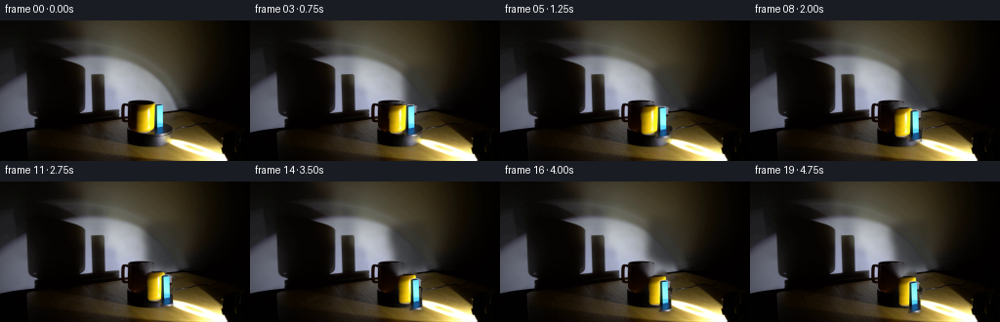
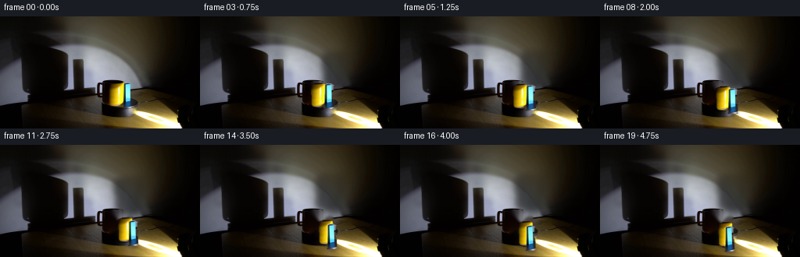
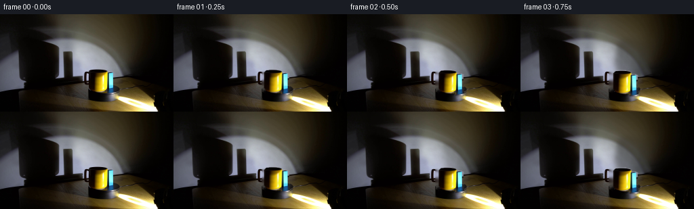
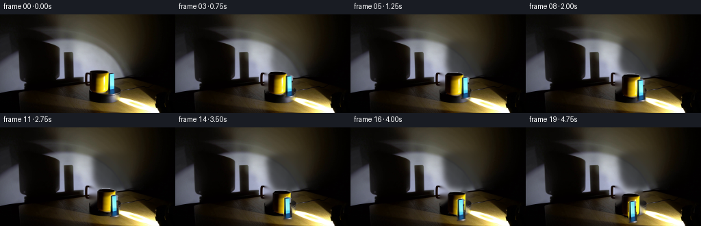
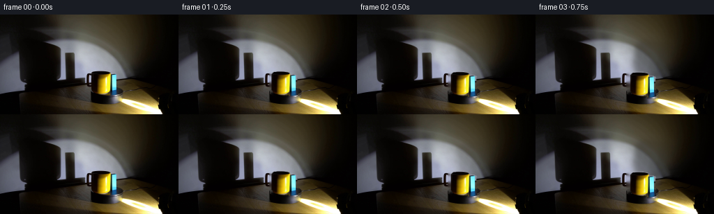

CODING AGENTS AS PIXEL WORLD MODELS
traex/DeepSeek-V4.1-Flash · 0079
点击播放 · 原生 RGB 像素
逐轮保存的候选
回放视频、检查图与代码变化。
每份候选均可单独播放。实际图片检查记录在下方工具轨迹中。
候选 01播放与检查图
点击播放 · 原生 RGB 像素

展开代码变化
--- 上一保存版本
+++ 本次保存版本
@@ -0,0 +1,255 @@
+from pathlib import Path
+import math
+
+import cv2
+import numpy as np
+from PIL import Image
+from scipy.ndimage import gaussian_filter
+
+import artifact_io
+
+
+ROOT = Path(__file__).resolve().parent
+WIDTH, HEIGHT = 256, 144
+N_FRAMES = 20
+FPS = 4
+
+
+def smoothstep(value):
+ value = np.clip(value, 0.0, 1.0)
+ return value * value * (3.0 - 2.0 * value)
+
+
+def make_prop_masks():
+ """Hand-fit masks around the two foreground props."""
+ mug = np.zeros((HEIGHT, WIDTH), np.uint8)
+ cv2.ellipse(mug, (149, 88), (9, 3), 0, 0, 360, 255, -1)
+ cv2.fillPoly(
+ mug,
+ [np.array([[140, 87], [158, 87], [157, 112], [141, 112]], np.int32)],
+ 255,
+ )
+ cv2.ellipse(mug, (149, 112), (8, 4), 0, 0, 360, 255, -1)
+
+ block = np.zeros((HEIGHT, WIDTH), np.uint8)
+ cv2.fillPoly(
+ block,
+ [np.array([[158, 86], [168, 86], [169, 117], [157, 117]], np.int32)],
+ 255,
+ )
+ cv2.ellipse(block, (163, 87), (6, 2), 0, 0, 360, 255, -1)
+
+ mug = cv2.GaussianBlur(mug, (3, 3), 0.55)
+ block = cv2.GaussianBlur(block, (3, 3), 0.45)
+ return mug, block
+
+
+def make_clean_plate(frame, masks):
+ mask = np.maximum.reduce(masks)
+ hard = (mask > 18).astype(np.uint8) * 255
+ hard = cv2.dilate(hard, np.ones((3, 3), np.uint8), iterations=1)
+ bgr = cv2.cvtColor(frame, cv2.COLOR_RGB2BGR)
+ clean_bgr = cv2.inpaint(bgr, hard, 4, cv2.INPAINT_TELEA)
+ clean = cv2.cvtColor(clean_bgr, cv2.COLOR_BGR2RGB).astype(np.float32)
+
+ # The mask sits across a hard wall-to-platform transition. A tiny vertical
+ # low-pass pass removes inpaint streaks without touching the surrounding plate.
+ strip = np.zeros((HEIGHT, WIDTH), np.float32)
+ strip[82:120, 134:173] = 1
+ strip *= (hard > 0).astype(np.float32)
+ blurred = cv2.GaussianBlur(clean, (5, 5), 1.0)
+ clean = clean * (1.0 - strip[..., None] * 0.22) + blurred * (strip[..., None] * 0.22)
+ return clean
+
+
+def extract_rgba(frame, alpha):
+ rgba = np.dstack([frame.astype(np.float32), alpha.astype(np.float32) / 255.0])
+ return rgba
+
+
+def affine_matrix(src_center, dst_center, scale_x, scale_y, angle_deg):
+ angle = math.radians(angle_deg)
+ c, s = math.cos(angle), math.sin(angle)
+ a = scale_x * c
+ b = -scale_y * s
+ d = scale_x * s
+ e = scale_y * c
+ sx, sy = src_center
+ dx, dy = dst_center
+ tx = dx - a * sx - b * sy
+ ty = dy - d * sx - e * sy
+ return np.array([[a, b, tx], [d, e, ty]], np.float32)
+
+
+def warp_rgba(rgba, matrix):
+ color = cv2.warpAffine(
+ rgba[:, :, :3],
+ matrix,
+ (WIDTH, HEIGHT),
+ flags=cv2.INTER_CUBIC,
+ borderMode=cv2.BORDER_CONSTANT,
+ borderValue=0,
+ )
+ alpha = cv2.warpAffine(
+ rgba[:, :, 3],
+ matrix,
+ (WIDTH, HEIGHT),
+ flags=cv2.INTER_CUBIC,
+ borderMode=cv2.BORDER_CONSTANT,
+ borderValue=0,
+ )
+ return color, np.clip(alpha, 0.0, 1.0)
+
+
+def composite(dst, color, alpha, brightness=1.0):
+ a = alpha[..., None]
+ dst[:] = dst * (1.0 - a) + np.clip(color * brightness, 0, 255) * a
+
+
+def contact_shadow(canvas, center, width, strength):
+ cx, cy = int(round(center[0])), int(round(center[1]))
+ mask = np.zeros((HEIGHT, WIDTH), np.float32)
+ cv2.ellipse(mask, (cx, cy), (max(4, int(width)), 4), 0, 0, 360, 1.0, -1)
+ mask = gaussian_filter(mask, 2.2)
+ mask *= (np.indices((HEIGHT, WIDTH))[0] >= cy - 3).astype(np.float32)
+ canvas *= (1.0 - strength * mask[..., None])
+
+
+def wall_shadow(canvas, sprite_alpha, center, phase, strength):
+ matrix = affine_matrix(
+ center,
+ (center[0] + 29.0 + 2.0 * math.sin(phase), center[1] - 31.0),
+ 2.05,
+ 1.55,
+ 8.0 * math.sin(phase * 0.7),
+ )
+ shadow = cv2.warpAffine(
+ sprite_alpha,
+ matrix,
+ (WIDTH, HEIGHT),
+ flags=cv2.INTER_LINEAR,
+ borderMode=cv2.BORDER_CONSTANT,
+ borderValue=0,
+ )
+ shadow = gaussian_filter(shadow, 3.7)
+ yy = np.indices((HEIGHT, WIDTH))[0]
+ wall = smoothstep((112.0 - yy) / 18.0)
+ wall *= smoothstep((np.maximum(canvas.mean(axis=2), 8.0) - 18.0) / 120.0)
+ wall *= 0.55 + 0.45 * smoothstep((WIDTH - np.indices((HEIGHT, WIDTH))[1]) / 80.0)
+ canvas *= (1.0 - strength * shadow[..., None] * wall[..., None])
+
+ # A faint second lobe keeps the projected shadow broad, as from a soft box.
+ broad = cv2.GaussianBlur(shadow, (0, 0), 7.5)
+ canvas *= (1.0 - 0.18 * strength * broad[..., None] * wall[..., None])
+
+
+def orbit_position(src_center, angle_deg):
+ # Perspective-compressed orbit around the middle of the black turntable.
+ cx, cy = 124.0, 112.0
+ depth_scale = 0.43
+ dx = src_center[0] - cx
+ dy = (src_center[1] - cy) / depth_scale
+ angle = math.radians(angle_deg)
+ c, s = math.cos(angle), math.sin(angle)
+ return (
+ cx + c * dx - s * dy,
+ cy + depth_scale * (s * dx + c * dy),
+ )
+
+
+def add_turntable_motion(canvas, angle_deg):
+ """Subtle rotating sheen on the otherwise nearly black platform."""
+ yy, xx = np.indices((HEIGHT, WIDTH), dtype=np.float32)
+ nx = (xx - 124.0) / 91.0
+ ny = (yy - 119.0) / 27.0
+ radius = np.sqrt(nx * nx + ny * ny)
+ platform = smoothstep((1.0 - radius) / 0.12) * smoothstep((yy - 105.0) / 16.0)
+ angle = np.arctan2(ny, nx)
+ phase = math.radians(angle_deg)
+ streak = (
+ 0.5
+ + 0.5
+ * np.cos(
+ 5.0 * (angle - phase)
+ + 10.5 * radius
+ )
+ )
+ streak = np.power(streak, 8.0)
+ band = np.exp(-((radius - 0.60) / 0.15) ** 2)
+ glow = platform * band * streak
+ canvas += glow[..., None] * np.array([5.0, 4.2, 2.8], np.float32)
+
+
+def render(first_frame):
+ mug_alpha, block_alpha = make_prop_masks()
+ clean = make_clean_plate(first_frame, (mug_alpha, block_alpha))
+ mug_rgba = extract_rgba(first_frame, mug_alpha)
+ block_rgba = extract_rgba(first_frame, block_alpha)
+
+ mug_src = (149.0, 100.5)
+ block_src = (163.5, 101.5)
+ frames = []
+ total_angle = 50.0
+
+ for index in range(N_FRAMES):
+ if index == 0:
+ frames.append(first_frame.copy())
+ continue
+
+ t = index / (N_FRAMES - 1)
+ eased = t * t * (3.0 - 2.0 * t)
+ angle = total_angle * eased
+ canvas = clean.copy()
+ add_turntable_motion(canvas, angle)
+
+ mug_center = orbit_position(mug_src, angle)
+ block_center = orbit_position(block_src, angle)
+
+ mug_scale_x = 0.96 + 0.055 * math.cos(math.radians(angle + 8.0))
+ block_scale_x = 0.82 + 0.19 * abs(math.cos(math.radians(angle - 7.0)))
+ mug_scale_y = 1.0 + 0.012 * math.sin(math.radians(angle))
+ block_scale_y = 1.0 - 0.018 * math.sin(math.radians(angle + 20.0))
+
+ mug_matrix = affine_matrix(mug_src, mug_center, mug_scale_x, mug_scale_y, 0.0)
+ block_matrix = affine_matrix(
+ block_src,
+ block_center,
+ block_scale_x,
+ block_scale_y,
+ -1.8 * math.sin(math.radians(angle)),
+ )
+ mug_color, mug_warped = warp_rgba(mug_rgba, mug_matrix)
+ block_color, block_warped = warp_rgba(block_rgba, block_matrix)
+
+ wall_shadow(canvas, mug_alpha.astype(np.float32) / 255.0, mug_center, angle + 0.2, 0.55)
+ wall_shadow(canvas, block_alpha.astype(np.float32) / 255.0, block_center, angle + 0.8, 0.43)
+
+ contact_shadow(canvas, (mug_center[0], mug_center[1] + 13.0), 10.0, 0.34)
+ contact_shadow(canvas, (block_center[0], block_center[1] + 14.5), 7.0, 0.28)
+
+ sprites = [
+ (mug_center[1] + 14.0, mug_color, mug_warped, 0.97 + 0.035 * math.sin(math.radians(angle))),
+ (block_center[1] + 15.0, block_color, block_warped, 0.95 + 0.055 * math.cos(math.radians(angle + 15.0))),
+ ]
+ for _, color, alpha, brightness in sorted(sprites, key=lambda item: item[0]):
+ composite(canvas, color, alpha, brightness)
+
+ # A restrained highlight at the leading edge helps sell the specular
+ # studio lighting without introducing new scene elements.
+ lead = smoothstep((canvas.mean(axis=2) - 110.0) / 100.0)
+ canvas = np.clip(canvas + lead[..., None] * np.array([1.5, 1.8, 2.1]), 0, 255)
+ frames.append(np.clip(np.rint(canvas), 0, 255).astype(np.uint8))
+
+ return np.stack(frames, axis=0)
+
+
+def main():
+ first = np.asarray(Image.open(ROOT / "first_frame.png").convert("RGB"), dtype=np.uint8)
+ assert first.shape == (HEIGHT, WIDTH, 3)
+ frames = render(first)
+ assert np.array_equal(frames[0], first)
+ artifact_io.save(frames, ROOT)
+
+
+if __name__ == "__main__":
+ main()
候选 02播放与检查图
点击播放 · 原生 RGB 像素
展开代码变化
--- 上一保存版本
+++ 本次保存版本
@@ -189,7 +189,7 @@
mug_src = (149.0, 100.5)
block_src = (163.5, 101.5)
frames = []
- total_angle = 50.0
+ total_angle = 58.0
for index in range(N_FRAMES):
if index == 0:
@@ -205,8 +205,8 @@
mug_center = orbit_position(mug_src, angle)
block_center = orbit_position(block_src, angle)
- mug_scale_x = 0.96 + 0.055 * math.cos(math.radians(angle + 8.0))
- block_scale_x = 0.82 + 0.19 * abs(math.cos(math.radians(angle - 7.0)))
+ mug_scale_x = 0.96 + 0.045 * math.cos(math.radians(angle + 8.0))
+ block_scale_x = 0.86 + 0.15 * abs(math.cos(math.radians(angle - 7.0)))
mug_scale_y = 1.0 + 0.012 * math.sin(math.radians(angle))
block_scale_y = 1.0 - 0.018 * math.sin(math.radians(angle + 20.0))
候选 03播放与检查图

候选 04播放与检查图
点击播放 · 原生 RGB 像素

展开代码变化
--- 上一保存版本
+++ 本次保存版本
@@ -189,7 +189,7 @@
mug_src = (149.0, 100.5)
block_src = (163.5, 101.5)
frames = []
- total_angle = 58.0
+ total_angle = 70.0
for index in range(N_FRAMES):
if index == 0:
@@ -197,8 +197,7 @@
continue
t = index / (N_FRAMES - 1)
- eased = t * t * (3.0 - 2.0 * t)
- angle = total_angle * eased
+ angle = total_angle * t
canvas = clean.copy()
add_turntable_motion(canvas, angle)
@@ -221,8 +220,21 @@
mug_color, mug_warped = warp_rgba(mug_rgba, mug_matrix)
block_color, block_warped = warp_rgba(block_rgba, block_matrix)
- wall_shadow(canvas, mug_alpha.astype(np.float32) / 255.0, mug_center, angle + 0.2, 0.55)
- wall_shadow(canvas, block_alpha.astype(np.float32) / 255.0, block_center, angle + 0.8, 0.43)
+ shadow_ramp = smoothstep((index - 0.5) / 4.5)
+ wall_shadow(
+ canvas,
+ mug_alpha.astype(np.float32) / 255.0,
+ mug_center,
+ angle + 0.2,
+ 0.55 * shadow_ramp,
+ )
+ wall_shadow(
+ canvas,
+ block_alpha.astype(np.float32) / 255.0,
+ block_center,
+ angle + 0.8,
+ 0.43 * shadow_ramp,
+ )
contact_shadow(canvas, (mug_center[0], mug_center[1] + 13.0), 10.0, 0.34)
contact_shadow(canvas, (block_center[0], block_center[1] + 14.5), 7.0, 0.28)
候选 05播放与检查图
候选 06播放与检查图
点击播放 · 原生 RGB 像素

展开代码变化
--- 上一保存版本
+++ 本次保存版本
@@ -23,13 +23,19 @@
def make_prop_masks():
"""Hand-fit masks around the two foreground props."""
mug = np.zeros((HEIGHT, WIDTH), np.uint8)
- cv2.ellipse(mug, (149, 88), (9, 3), 0, 0, 360, 255, -1)
+ cv2.ellipse(mug, (145, 85), (13, 4), 0, 0, 360, 255, -1)
cv2.fillPoly(
mug,
- [np.array([[140, 87], [158, 87], [157, 112], [141, 112]], np.int32)],
+ [
+ np.array(
+ [[132, 85], [158, 85], [158, 110], [155, 114], [146, 117],
+ [137, 114], [132, 108]],
+ np.int32,
+ )
+ ],
255,
)
- cv2.ellipse(mug, (149, 112), (8, 4), 0, 0, 360, 255, -1)
+ cv2.ellipse(mug, (145, 112), (12, 4), 0, 0, 360, 255, -1)
block = np.zeros((HEIGHT, WIDTH), np.uint8)
cv2.fillPoly(
@@ -186,7 +192,7 @@
mug_rgba = extract_rgba(first_frame, mug_alpha)
block_rgba = extract_rgba(first_frame, block_alpha)
- mug_src = (149.0, 100.5)
+ mug_src = (145.0, 100.0)
block_src = (163.5, 101.5)
frames = []
total_angle = 70.0
@@ -236,7 +242,7 @@
0.43 * shadow_ramp,
)
- contact_shadow(canvas, (mug_center[0], mug_center[1] + 13.0), 10.0, 0.34)
+ contact_shadow(canvas, (mug_center[0], mug_center[1] + 13.0), 12.0, 0.34)
contact_shadow(canvas, (block_center[0], block_center[1] + 14.5), 7.0, 0.28)
sprites = [
候选 07播放与检查图
点击播放 · 原生 RGB 像素


展开代码变化
--- 上一保存版本
+++ 本次保存版本
@@ -151,7 +151,7 @@
def orbit_position(src_center, angle_deg):
# Perspective-compressed orbit around the middle of the black turntable.
- cx, cy = 124.0, 112.0
+ cx, cy = 124.0, 110.0
depth_scale = 0.43
dx = src_center[0] - cx
dy = (src_center[1] - cy) / depth_scale
可观测工具轨迹
实际执行的命令与返回图片。
命令 1exit 0
/bin/bash -c "pwd && rg --files -g '"'!*.mp4'"' -g '"'!*.mov'"'"
命令 2exit 0
/bin/bash -c "sed -n '1,240p' prompt.txt"
命令 3exit 0
/bin/bash -c "sed -n '1,300p' GENERATION_RULES.md"
命令 4exit 0
/bin/bash -c 'file first_frame.png && identify first_frame.png 2>/dev/null || true && ls -lah'
命令 5exit 0
/bin/bash -c "sed -n '1,260p' artifact_io.py"
命令 6exit 0
/bin/bash -c "sed -n '1,260p' player_template.html"
命令 7exit 0
/bin/bash -c "python - <<'PY'
from PIL import Image
im=Image.open('first_frame.png')
print(im.size, im.mode)
print(im.getpixel((0,0)), im.getpixel((128,72)), im.getpixel((255,143)))
PY"命令 8exit 0
/bin/bash -c "python - <<'PY' mods=['numpy','PIL','cv2','imageio','scipy','skimage','matplotlib'] for m in mods: try: x=__import__(m); print(m,'ok',getattr(x,'__version__','')) except Exception as e: print(m,'no',type(e).__name__) PY"
命令 9exit 0
/bin/bash -c "python - <<'PY'
from PIL import Image
import numpy as np
im=np.array(Image.open('first_frame.png'))
# 4x4 block averages, print rgb quantized and luma ascii
for y in range(0,144,6):
row=[]
for x in range(0,256,6):
b=im[y:y+6,x:x+6].reshape(-1,3).mean(0)
r,g,bl=b
if r>130 and g>100 and bl<80: c='Y'
elif bl>r*1.35 and bl>g*1.08 and bl>50: c='B'
elif r+g+bl<80: c='#'
elif r+g+bl>500: c='W'
elif bl>r*1.15 and bl>g*1.02: c='b'
elif r>g*1.15 and r>bl*1.2: c='r'
else: c='.'
row.append(c)
print(''.join(row))
print('\\nmean colors by 8x8')
for y in range(0,144,16):
print(' '.join(f'{im[y:y+16,x:x+16].mean((0,1)).astype(int)}' for x in range(0,256,32)))
PY"命令 10exit 0
/bin/bash -c "python - <<'PY'
from PIL import Image
import numpy as np
im=np.array(Image.open('first_frame.png')).astype(float)
chars=' .,:;irsXA253hMHGS#9B&@'
# 2x3 cells, luma mapping after gamma
for y in range(0,144,3):
s=''
for x in range(0,256,2):
b=im[y:y+3,x:x+2].mean((0,1)); l=b.mean()
# preserve hue with letters
r,g,bl=b
if l<10:c=' '
elif l<25:c='.'
elif l<50:c=':'
elif l<80:c='-'
elif l<120:c='='
elif l<160:c='+'
elif l<200:c='*'
elif l<235:c='O'
else:c='@'
if r>g*1.4 and r>bl*1.6 and r>50:c='R'
elif g>bl*1.35 and r>g*.85 and l>45:c='Y'
elif bl>r*1.4 and bl>g*1.1 and l>40:c='B'
s+=c
print(f'{y:03d} '+s)
PY"命令 11exit 0
/bin/bash -c "python - <<'PY'
from PIL import Image
import numpy as np
from scipy import ndimage
im=np.array(Image.open('first_frame.png')).astype(float)
# print key rows/cols average and color values every 8 pixels
print('Row color samples:')
for y in [0,8,16,24,32,40,48,56,64,72,80,88,96,104,112,120,128,136,143]:
print(f'y={y:3d}', ' '.join(f'{x}:{im[y,x].astype(int)}' for x in range(0,256,16)))
print('\\nColumn color samples:')
for x in [0,16,32,48,64,80,96,112,128,144,160,176,192,208,224,240,255]:
print(f'x={x:3d}', ' '.join(f'{y}:{im[y,x].astype(int)}' for y in range(0,144,12)))
PY"命令 12exit 0
/bin/bash -c "python - <<'PY'
from PIL import Image
import numpy as np
im=np.array(Image.open('first_frame.png'))
# color masks counts and bboxes
r,g,b=[im[:,:,i].astype(int) for i in range(3)]
masks={
'yellow':(r>110)&(g>75)&(b<55)&(r>g*1.12),
'blue':(b>r*1.45)&(b>g*1.08)&(b>45),
'white':(r>170)&(g>170)&(b>170),
'red':(r>80)&(r>g*1.5)&(r>b*2),
'brightgray':(r>110)&(abs(r-g)<30)&(b>80),
}
from scipy import ndimage
for k,m in masks.items():
lab,n=ndimage.label(m)
parts=[]
for i in range(1,n+1):
ys,xs=np.where(lab==i)
if len(xs)>8: parts.append((len(xs),xs.min(),xs.max(),ys.min(),ys.max(),tuple(np.median(im[ys,xs],axis=0).astype(int))))
print('\\n',k, 'total',m.sum())
print(sorted(parts,reverse=True)[:20])
PY"命令 13exit 0
/bin/bash -c "python - <<'PY'
from PIL import Image
import numpy as np
im=np.array(Image.open('first_frame.png')).astype(int)
x0,x1,y0,y1=115,235,70,144
for y in range(y0,y1):
s=''
for x in range(x0,x1):
r,g,b=im[y,x]
l=(r+g+b)/3
if b>r*1.5 and b>g*1.15 and b>40:c='B'
elif b>r*1.25 and b>g*1.02 and b>30:c='b'
elif g>b*1.4 and r>g*.8 and r>70:c='Y'
elif g>b*1.25 and r>50 and r>g*.75:c='y'
elif r>g*1.35 and g>b*1.3 and r>40:c='R'
elif r>175 and g>175 and b>160:c='W'
elif r>110 and g>110 and b>105:c='w'
elif l<8:c=' '
elif l<20:c='.'
elif l<40:c=':'
elif l<65:c='-'
elif l<95:c='='
elif l<130:c='+'
elif l<170:c='*'
else:c='#'
s+=c
print(f'{y:03d} {s}')
PY"命令 14exit 0
/bin/bash -c "python - <<'PY'
from PIL import Image
import numpy as np
im=np.array(Image.open('first_frame.png')).astype(int)
# List row runs for high saturation hue regions
for y in range(80,130,2):
s=''
for x in range(110,240,1):
r,g,b=im[y,x]
if b>r*1.4 and b>g*1.10 and b>40:c='B'
elif g>b*1.28 and r>60 and r>g*.72:c='Y'
elif r>g*1.15 and g>b*1.4 and r>50:c='R'
elif r+g+b>560:c='W'
elif r+g+b>420 and abs(r-g)<20 and b>g*.85:c='w'
elif r+g+b>250:c='+'
elif r+g+b>120:c='.'
else:c=' '
s+=c
print(f'{y:03d} {s}')
PY"命令 15exit 0
/bin/bash -c "python - <<'PY'
from PIL import Image
import numpy as np
im=np.array(Image.open('first_frame.png'))
# print actual RGB in mug block bounding region, step 3
for y in range(84,122,2):
vals=[]
for x in range(140,176,4):
vals.append('#'+''.join(f'{c:02x}' for c in im[y,x]))
print(y,' '.join(vals))
PY"命令 16exit 0
/bin/bash -c "python - <<'PY'
from PIL import Image
import numpy as np
im=np.array(Image.open('first_frame.png')).astype(float)
# use Sobel-like edges, summarize dominant vertical/horiz edge coords in object ROI
g=im.mean(2)
gx=np.abs(np.diff(g,axis=1)); gy=np.abs(np.diff(g,axis=0))
for y in range(80,122,2):
print(f'{y:3d}', ''.join('X' if gx[y,x]>25 else '+' if gx[y,x]>8 else ' ' for x in range(135,180)))
PY"命令 17exit 0
/bin/bash -c "python - <<'PY'
from PIL import Image
import numpy as np
im=np.array(Image.open('first_frame.png')).astype(int)
for y in range(82,120):
s=''
for x in range(135,181):
r,g,b=im[y,x]
l=max(r,g,b)
if l<12:c=' '
elif l<30:c='.'
elif l<60:c=':'
elif l<100:c='-'
elif l<150:c='='
elif l<200:c='+'
elif l<240:c='*'
else:c='@'
if b>r*1.4 and b>g*1.08 and b>40:c='B'
elif r>130 and g>90 and b<45:c='Y'
elif r>g*1.3 and g>b*1.5 and r>45:c='R'
elif r+g+b>600 and abs(r-g)<20:c='W'
s+=c
print(f'{y:03d} {s}')
PY"命令 18exit 0
/bin/bash -c "python - <<'PY'
from PIL import Image
im=Image.open('first_frame.png')
im.resize((1024,576),Image.Resampling.NEAREST).save('.tmp/first_zoom.png')
PY"命令 19exit 0
/bin/bash -c "python - <<'PY'
from PIL import Image
import numpy as np
im=np.array(Image.open('first_frame.png')).astype(float)
g=im.mean(2)
# gradients
gx=np.abs(np.diff(g,axis=1)); gy=np.abs(np.diff(g,axis=0))
# strongest vertical edge per row and horizontal edge per col
for y in range(0,144,4):
xs=np.argsort(gx[y])[-8:][::-1]
print(f'y{y:3d} V', ' '.join(f'{x}:{gx[y,x]:.0f}' for x in xs))
print('H edges')
for x in range(0,256,8):
ys=np.argsort(gy[:,x])[-8:][::-1]
print(f'x{x:3d} H', ' '.join(f'{y}:{gy[y,x]:.0f}' for y in ys))
PY"命令 20exit 0
/bin/bash -c "python - <<'PY'
import cv2, numpy as np
im=cv2.imread('first_frame.png')
g=cv2.cvtColor(im,cv2.COLOR_BGR2GRAY)
g=cv2.GaussianBlur(g,(3,3),0)
e=cv2.Canny(g,15,50)
cs,_=cv2.findContours(e,cv2.RETR_LIST,cv2.CHAIN_APPROX_SIMPLE)
cs=sorted(cs,key=cv2.contourArea,reverse=True)
for c in cs[:30]:
x,y,w,h=cv2.boundingRect(c); area=cv2.contourArea(c); per=cv2.arcLength(c,True)
print(area,(x,y,w,h),'per',round(per,1))
cv2.imwrite('.tmp/edges.png',e)
PY"命令 21exit 0
/bin/bash -c "python - <<'PY'
from PIL import Image
import numpy as np
im=np.array(Image.open('first_frame.png')).astype(int)
# sample border and interior grid values compact
for y in range(0,144,8):
print(f'{y:03d}', ' '.join(f'{im[y,x,0]:03d}/{im[y,x,1]:03d}/{im[y,x,2]:03d}' for x in range(0,256,32)))
PY"命令 22exit 1
/bin/bash -c "python - <<'PY'
import cv2,numpy as np
im=cv2.imread('first_frame.png')[:,:,::-1]
pix=im.reshape(-1,3).astype(np.float32)
crit=(cv2.TERM_CRITERIA_EPS+cv2.TERM_CRITERIA_MAX_ITER,100,.2)
_,lab,cent=cv2.kmeans(pix,12,None,crit,10,cv2.KMEANS_PP_CENTERS)
cent=cent.astype(int)
order=np.argsort(cent.mean(1))
remap=np.zeros(12,int)
chars=' .:-=+*#%@B'
for i,k in enumerate(order): remap[k]=i
lab=lab.reshape(144,256)
for i,k in enumerate(order): print(chars[i],cent[k].tolist())
print()
for y in range(0,144,4):
s=''
for x in range(0,256,4):
v=remap[lab[y:y+4,x:x+4]].astype(int)
# mode
u,c=np.unique(v,return_counts=True); idx=u[c.argmax()]
s+=chars[idx]
print(f'{y:03d} {s}')
PY"命令 23exit 0
/bin/bash -c "python - <<'PY'
import cv2,numpy as np
im=cv2.imread('first_frame.png')[:,:,::-1]
pix=im.reshape(-1,3).astype(np.float32)
crit=(cv2.TERM_CRITERIA_EPS+cv2.TERM_CRITERIA_MAX_ITER,100,.2)
_,lab,cent=cv2.kmeans(pix,12,None,crit,10,cv2.KMEANS_PP_CENTERS)
cent=cent.astype(int)
order=np.argsort(cent.mean(1)); chars=' .:-=+*#%@&"'$'"'
remap=np.zeros(12,int)
for i,k in enumerate(order): remap[k]=i
lab=lab.reshape(144,256)
for y in range(0,144,4):
s=''
for x in range(0,256,4):
v=remap[lab[y:y+4,x:x+4]].astype(int)
u,c=np.unique(v,return_counts=True); idx=u[c.argmax()]
s+=chars[idx]
print(f'{y:03d} {s}')
PY"命令 24exit 0
/bin/bash -c "python - <<'PY'
import cv2,numpy as np
im=cv2.imread('first_frame.png')
# inspect Hough circles
g=cv2.cvtColor(im,cv2.COLOR_BGR2GRAY)
g=cv2.GaussianBlur(g,(5,5),1)
for p2 in [10,15,20,25,30]:
cs=cv2.HoughCircles(g,cv2.HOUGH_GRADIENT,1,8,param1=30,param2=p2,minRadius=3,maxRadius=40)
print('p2',p2,None if cs is None else np.round(cs[0][:20],1).tolist())
PY"命令 25exit 0
/bin/bash -c "python - <<'PY'
import cv2,numpy as np
im=cv2.imread('first_frame.png')
# print sample grid object region RGB hex at 2px
for y in range(84,118,2):
print(f'{y:03d}', ' '.join(f'{x}:{im[y,x,2]:02x}{im[y,x,1]:02x}{im[y,x,0]:02x}' for x in range(136,174,2)))
PY"命令 26exit 0
/bin/bash -c "python - <<'PY'
import cv2,numpy as np
im=cv2.imread('first_frame.png')[:,:,::-1].astype(float)
# circles overlay centers test; print average edge radial support
for cx,cy,r in [(149,100,16),(148,100,14),(145,100,16),(147,104,14),(149,101,17)]:
vals=[]
for a in np.linspace(0,2*np.pi,720,endpoint=False):
x=int(round(cx+r*np.cos(a))); y=int(round(cy+r*np.sin(a)))
vals.append(np.linalg.norm(im[min(143,max(0,y)),min(255,max(0,x))]-im[min(143,max(0,y+1)),min(255,max(0,x))]))
print(cx,cy,r,np.mean(vals))
PY"命令 27exit 0
/bin/bash -c "python - <<'PY'
from PIL import Image
import numpy as np
im=np.array(Image.open('first_frame.png')).astype(float)
# Print color grid crop as chars: categories yellow, white, cyan, blue, gray, dark, brown
for y in range(84,118):
s=''
for x in range(136,174):
r,g,b=im[y,x]
l=(r+g+b)/3
if b>160 and g>180 and b>r*1.2:c='C'
elif b>r*1.5 and b>g*1.25 and b>40:c='B'
elif r>180 and g>120 and b<100:c='Y'
elif r>g*1.35 and g>b*1.5 and r>45:c='y'
elif r+g+b>550:c='W'
elif abs(r-g)<20 and abs(g-b)<25 and l>90:c='w'
elif l>55:c='+'
elif l>28:c='.'
elif l>12:c=','
else:c=' '
s+=c
print(f'{y:03d} {s}')
PY"命令 28exit 0
/bin/bash -c "python - <<'PY'
import cv2,numpy as np
im=cv2.imread('first_frame.png')[:,:,::-1].astype(float)
# radial edge support all centers/r
best=[]
for cx in range(140,154):
for cy in range(94,108):
for r in range(11,19):
vals=[]
for a in np.linspace(0,2*np.pi,180,endpoint=False):
x=int(round(cx+r*np.cos(a))); y=int(round(cy+r*np.sin(a)))
if 1<=x<255 and 1<=y<143:
vals.append(np.abs(im[y,x]-im[y,x-1]).mean()+np.abs(im[y,x]-im[y-1,x]).mean())
best.append((np.mean(vals),cx,cy,r))
print(sorted(best,reverse=True)[:30])
PY"命令 29exit 0
/bin/bash -c "python - <<'PY'
import cv2,numpy as np
im=cv2.imread('first_frame.png')[:,:,::-1].astype(float)
# vertical central line color and horizontal line
for x in [144,145,146,147,148,149,150,151,152,153,154,155,156,157,158]:
print('x',x, ' '.join(f'{y}:{im[y,x].astype(int)}' for y in range(84,116,3)))
PY"命令 30exit 0
/bin/bash -c "python - <<'PY'
import cv2,numpy as np
im=cv2.imread('first_frame.png')[:,:,::-1].astype(float)
# Create object mask via difference from robust background estimated by row/col? Grab region manually and print region values categorized
# infer exact mug bbox by saturation/luma > thresholds
r,g,b=im[:,:,0],im[:,:,1],im[:,:,2]
mask=(r>80)&(g>40)&(b<100)&(r>g*1.1)
mask[:80]=False;mask[:, :130]=False;mask[:,175:]=False
ys,xs=np.where(mask)
print(len(xs), xs.min(),xs.max(),ys.min(),ys.max())
# per-row extent
for y in range(84,117):
xx=np.where(mask[y])[0]
if len(xx): print(y,xx.min(),xx.max())
PY"命令 31exit 0
/bin/bash -c "python - <<'PY'
from PIL import Image
import numpy as np
im=np.array(Image.open('first_frame.png')).astype(int)
# detailed char crop original colors, 1px x, with grid indices
print(' '+''.join(str(x//10%10) for x in range(130,180)))
print(' '+''.join(str(x%10) for x in range(130,180)))
for y in range(78,122):
s=''
for x in range(130,180):
r,g,b=im[y,x]
if b>r*1.45 and b>g*1.1 and b>40:c='B'
elif r>150 and g>100 and b<100:c='Y'
elif r>g*1.25 and g>b*1.25 and r>50:c='R'
elif r+g+b>650:c='W'
elif r+g+b>450:c='w'
elif r+g+b>300:c='+'
elif r+g+b>160:c='.'
elif r+g+b>70:c=','
else:c=' '
s+=c
print(f'{y:03d} {s}')
PY"命令 32exit 0
/bin/bash -c "python - <<'PY'
from PIL import Image
import numpy as np
im=np.array(Image.open('first_frame.png')).astype(int)
# exact mug mask based on yellow-ish high red/g and colored area. save alpha debug crop
r,g,b=im[:,:,0],im[:,:,1],im[:,:,2]
# Region local object base
Y=(r>65)&(g>35)&(b<105)&(r>g*1.08)&(g>b*1.35)
B=(b>r*1.35)&(b>g*1.05)&(b>40)
W=(r>125)&(g>125)&(b>105)&(abs(r-g)<28)&(abs(g-b)<45)
# restrict ROI; inspect combined mask
M=np.zeros((144,256),bool); M[82:117,136:174]=1
M &= (Y|B|W)
# erase background pale columns? show ascii
for y in range(82,118):
print(f'{y:03d}', ''.join('Y' if Y[y,x] and M[y,x] else 'B' if B[y,x] and M[y,x] else 'W' if W[y,x] and M[y,x] else ' ' for x in range(136,174)))
PY"命令 33exit 0
/bin/bash -c "python - <<'PY'
from PIL import Image
import numpy as np
im=np.array(Image.open('first_frame.png')).astype(float)
# quantize to 16x9 cells, output HSV categories and brightness
# use colors: B blue, Y yellow, C cyan, W white, G gray, R reddish, K dark
for gy in range(16):
row=''
for gx in range(32):
c=im[gy*9:(gy+1)*9,gx*8:(gx+1)*8].reshape(-1,3)
r,g,b=c.mean(0); mx=c.max(1).mean(); l=c.mean()
if b>r*1.35 and b>g*1.05 and b>45: ch='B'
elif g>r*1.1 and b>r*1.1 and l>45: ch='C'
elif r>g*1.15 and g>b*1.35 and r>45: ch='Y'
elif r>g*1.35 and r>b*1.8 and r>40: ch='R'
elif abs(r-g)<18 and abs(g-b)<25 and l>145: ch='W'
elif abs(r-g)<20 and abs(g-b)<25 and l>65: ch='w'
elif l>50: ch='.'
elif l>20: ch=','
else: ch=' '
row+=ch
print(f'{gy:02d} {row}')
PY"命令 34exit 0
/bin/bash -c "python - <<'PY'
from PIL import Image
import numpy as np
from scipy import ndimage
im=np.array(Image.open('first_frame.png')).astype(float)
r,g,b=[im[:,:,i] for i in range(3)]
conds={
'dark':(r+g+b<75),
'warm_mid':(r>g*1.15)&(g>b*1.15)&(r+g+b>180),
'warm_bright':(r>g*1.08)&(g>b*1.15)&(r+g+b>430),
'neutral_mid':(abs(r-g)<20)&(abs(g-b)<28)&(r+g+b>200)&(r+g+b<500),
'neutral_bright':(abs(r-g)<20)&(abs(g-b)<35)&(r+g+b>500),
'blue':(b>r*1.3)&(b>g*1.05)&(b>35),
'cyan':(g>r*1.08)&(b>r*1.2)&(g+b>180),
'yellow':(r>g*1.08)&(g>b*1.35)&(r+g>180),
}
for name,m in conds.items():
lab,n=ndimage.label(m)
print('\\n',name,m.sum())
parts=[]
for i in range(1,n+1):
ys,xs=np.where(lab==i)
if len(xs)>20:
parts.append((len(xs),(xs.min(),ys.min(),xs.max(),ys.max()),tuple(np.median(im[ys,xs],axis=0).astype(int))))
print(sorted(parts,reverse=True)[:12])
PY"命令 35exit 0
/bin/bash -c "python - <<'PY'
import numpy as np
from PIL import Image
im=np.array(Image.open('first_frame.png'))
# montage edge maps + original at 2x saved for internal inspection
import cv2
z=cv2.resize(im,(512,288),interpolation=cv2.INTER_NEAREST)
e=cv2.Canny(cv2.GaussianBlur(cv2.cvtColor(im,cv2.COLOR_RGB2GRAY),(3,3),0),10,40)
e=cv2.resize(e,(512,288),interpolation=cv2.INTER_NEAREST)
cv2.imwrite('.tmp/edge_zoom.png',np.vstack([z,cv2.cvtColor(e,cv2.COLOR_GRAY2RGB)]))
PY"命令 36exit 0
/bin/bash -c "python - <<'PY'
from PIL import Image
import numpy as np
im=np.array(Image.open('first_frame.png')).astype(float)
# characterize background wall luminance at coordinates as interpolated 2D curve; use printed matrix coarse normalized
for y in [0,16,32,48,64,80,96,112,128,143]:
print(f'{y:3d}', ' '.join(f'{im[y,x].mean():5.1f}' for x in range(0,256,8)))
PY"命令 37exit 0
/bin/bash -c "python - <<'PY'
from PIL import Image
import numpy as np
im=np.array(Image.open('first_frame.png')).astype(float)
# Print row y=100 every x and y=112 etc
for y in [88,92,96,100,104,108,112,116,120,124,128,132,136,140,143]:
print('Y',y)
for x in range(0,256,16):
print(f'{x:03d}:{im[y,x].astype(int)}',end=' ')
print()
PY"命令 38exit 0
/bin/bash -c "python - <<'PY'
from PIL import Image
import numpy as np
im=np.array(Image.open('first_frame.png')).astype(int)
# compute mask of near-black and print runs per row for dark structure
D=im.mean(2)<12
for y in range(0,144,4):
runs=[]; start=None
for x in range(256):
if D[y,x] and start is None:start=x
if start is not None and (not D[y,x] or x==255):
end=x-1 if not D[y,x] else x
if end-start>=2:runs.append((start,end))
start=None
print(f'{y:03d}',runs)
PY"命令 39exit 0
/bin/bash -c "python - <<'PY'
import numpy as np
from PIL import Image
im=np.array(Image.open('first_frame.png')).astype(int)
# Print character-coded image at 4x2 using colors and edges, broad scene map
for y in range(0,144,4):
s=''
for x in range(0,256,4):
c=im[y:y+4,x:x+4].reshape(-1,3); r,g,b=c.mean(0); l=c.mean()
if b>r*1.3 and b>g*1.05 and b>35: ch='B'
elif g>r*1.12 and b>r*1.1 and l>30: ch='C'
elif r>g*1.12 and g>b*1.25 and l>25: ch='Y'
elif abs(r-g)<18 and abs(g-b)<25 and l>120: ch='W'
elif abs(r-g)<20 and abs(g-b)<25 and l>50: ch='w'
elif l>80: ch='*'
elif l>45: ch='+'
elif l>22: ch='='
elif l>10: ch='-'
elif l>4: ch='.'
else: ch=' '
s+=ch
print(f'{y:03d} {s}')
PY"命令 40exit 0
/bin/bash -c "python - <<'PY'
import cv2,numpy as np
im=cv2.imread('first_frame.png')[:,:,::-1].astype(float)
# examine variance and exact color samples in central blue block, map likely geometry
# save crop 8x pixel for pixel art maybe inspect via OCR impossible; print color patch using palette symbols unique
crop=im[84:118,136:172].astype(int)
for y in range(crop.shape[0]):
s=''
for x in range(crop.shape[1]):
r,g,b=crop[y,x]
if b>180 and g>150:c='c'
elif b>80 and b>r*1.5 and b>g*1.15:c='b'
elif b>45 and b>r*1.3:c='B'
elif r>220 and g>180 and b<100:c='Y'
elif r>120 and g>80 and b<80:c='y'
elif r+g+b>650:c='W'
elif r+g+b>500:c='w'
elif r+g+b>300:c='+'
elif r+g+b>150:c='.'
elif r+g+b>60:c=','
else:c=' '
s+=c
print(f'{84+y:03d} {s}')
PY"命令 41exit 1
/bin/bash -c 'python generate.py'
命令 42exit 0
/bin/bash -c 'python generate.py && ls -lh pixels.npz frames inspection.png transition_check.png index.html'
命令 43exit 0
/bin/bash -c "python - <<'PY'
from PIL import Image
import numpy as np
ims=[Image.open(f'frames/{i:02d}.png') for i in [0,3,6,9,12,15,18,19]]
# 4x2 enlarged contact sheet
out=Image.new('RGB',(256*4,144*2),(20,20,20))
for i,im in enumerate(ims):out.paste(im,((i%4)*256,(i//4)*144))
out.resize((2048,576),Image.Resampling.NEAREST).save('.tmp/review.png')
# print stats and bounding boxes of color masks for selected frames
for i in [0,1,3,6,9,12,15,18,19]:
a=np.array(Image.open(f'frames/{i:02d}.png')).astype(int)
r,g,b=a[:,:,0],a[:,:,1],a[:,:,2]
yellow=(r>130)&(g>80)&(b<70)&(r>g*1.08)
blue=(b>r*1.3)&(b>g*1.05)&(b>35)
print(i,'yellow',yellow.sum(),'blue',blue.sum(),'mean',a.mean((0,1)).round(1))
PY"命令 44exit 0
/bin/bash -c "python - <<'PY'
from PIL import Image
import numpy as np
for i in [0,1,3,6,9,12,15,18,19]:
a=np.array(Image.open(f'frames/{i:02d}.png')).astype(int)
r,g,b=a[:,:,0],a[:,:,1],a[:,:,2]
# color masks bbox largest comp
import cv2
for name,m in [('Y',((r>120)&(g>70)&(b<70)&(r>g*1.05)).astype('uint8')),('B',((b>r*1.3)&(b>g*1.02)&(b>35)).astype('uint8'))]:
n,l,st,c=cv2.connectedComponentsWithStats(m)
if n>1:
k=1+np.argmax(st[1:,4]); print(i,name,st[k].tolist())
PY"命令 45exit 0
/bin/bash -c "python generate.py && python - <<'PY'
from PIL import Image
import numpy as np, cv2
for i in [0,3,6,9,12,15,18,19]:
a=np.array(Image.open(f'frames/{i:02d}.png')).astype(int)
r,g,b=a[:,:,0],a[:,:,1],a[:,:,2]
for name,m in [('Y',((r>120)&(g>70)&(b<70)&(r>g*1.05)).astype('uint8')),('B',((b>r*1.3)&(b>g*1.02)&(b>35)).astype('uint8'))]:
n,l,st,c=cv2.connectedComponentsWithStats(m)
if n>1:
k=1+np.argmax(st[1:,4]); print(i,name,st[k].tolist())
PY"命令 46exit 0
/bin/bash -c "python - <<'PY'
from PIL import Image
import numpy as np
im=Image.open('first_frame.png')
# broad structure maps
for y in range(0,144,2):
s=''
for x in range(0,256,2):
c=np.array(im.crop((x,y,x+2,y+2))).reshape(-1,3).mean(0);r,g,b=c;l=c.mean()
if b>r*1.35 and b>g*1.05 and b>35:ch='B'
elif g>r*1.1 and b>r*1.15 and l>30:ch='C'
elif r>g*1.12 and g>b*1.25 and l>25:ch='Y'
elif abs(r-g)<18 and abs(g-b)<25 and l>120:ch='W'
elif abs(r-g)<20 and abs(g-b)<25 and l>50:ch='w'
elif l>80:ch='*'
elif l>45:ch='+'
elif l>22:ch='='
elif l>10:ch='-'
elif l>4:ch='.'
else:ch=' '
s+=ch
print(f'{y:03d} {s}')
PY"命令 47exit 0
/bin/bash -c "python - <<'PY'
import importlib.util, numpy as np
from PIL import Image
spec=importlib.util.spec_from_file_location('g','generate.py');g=importlib.util.module_from_spec(spec);spec.loader.exec_module(g)
f=np.array(Image.open('first_frame.png'))
ma,ba=g.make_prop_masks(); clean=g.make_clean_plate(f,(ma,ba))
for name,m in [('mug',ma),('block',ba)]:
ys,xs=np.where(m>20); print(name, (xs.min(),ys.min(),xs.max(),ys.max()),len(xs),'alpha mean',m[ys,xs].mean())
# per rows extents
for y in range(ys.min(),ys.max()+1,4):
xx=np.where(m[y]>20)[0]
print(y,(xx.min(),xx.max()) if len(xx) else None)
Image.fromarray(clean.astype('uint8')).save('.tmp/clean.png')
PY"命令 48exit 0
/bin/bash -c "python - <<'PY'
from PIL import Image
import numpy as np
for f in ['first_frame.png','.tmp/clean.png','frames/00.png','frames/06.png','frames/12.png','frames/19.png']:
a=np.array(Image.open(f))
# crop relevant, make ascii brightness
print('\\n',f)
for y in range(80,122,3):
s=''
for x in range(128,184,2):
c=a[y:y+3,x:x+2].mean((0,1));l=c.mean()
if c[2]>c[0]*1.4 and c[2]>c[1]*1.1 and c[2]>40:ch='B'
elif c[0]>100 and c[1]>65 and c[2]<70:ch='Y'
elif l>160:ch='W'
elif l>100:ch='*'
elif l>60:ch='+'
elif l>30:ch='='
elif l>12:ch='-'
elif l>4:ch='.'
else:ch=' '
s+=ch
print(f'{y:03d} {s}')
PY"命令 49exit 0
/bin/bash -c "python - <<'PY'
from PIL import Image
import numpy as np
for f in ['first_frame.png','.tmp/clean.png']:
a=np.array(Image.open(f)).astype(int)
print('\\n',f)
# dark and luma rows object region at x 120-180, print each row run bounds for non-dark
for y in range(80,122,2):
# min max where luma >30 or color sat
l=a[y].mean(1)
xs=np.where((l>25)|((a[y].max(1)-a[y].min(1))>25))[0]
xs=xs[(xs>=120)&(xs<190)]
print(y,(xs.min(),xs.max()) if len(xs) else None, 'mean',a[y,120:190].mean().round(1))
PY"命令 50exit 0
/bin/bash -c "python - <<'PY'
from PIL import Image
import numpy as np
from scipy import ndimage
im=np.array(Image.open('first_frame.png')).astype(int)
# segmentation using color clusters in ROI and print RGB palette center frequencies
crop=im[82:119,130:176]
from sklearn.cluster import KMeans
X=crop.reshape(-1,3)
for k in [6,8,10]:
km=KMeans(k,random_state=0,n_init=5).fit(X)
cent=km.cluster_centers_.astype(int); cnt=np.bincount(km.labels_)
print('K',k)
for j in np.argsort(-cnt): print(cnt[j],cent[j])
PY"命令 51exit 0
/bin/bash -c "python - <<'PY'
from PIL import Image
import numpy as np
im=np.array(Image.open('first_frame.png')).astype(int)
# Print dark object region only with threshold, detailed row boundaries
for y in range(82,120):
s=''
for x in range(130,180):
r,g,b=im[y,x]; l=(r+g+b)/3
if l<9: ch='#'
elif l<20:ch='@'
elif l<40:ch='%'
elif l<70:ch='*'
elif l<110:ch='+'
elif l<160:ch='='
elif l<210:ch='-'
else:ch=' '
s+=ch
print(f'{y:03d} {s}')
PY"命令 52exit 0
/bin/bash -c "python - <<'PY'
from PIL import Image
import numpy as np
im=np.array(Image.open('first_frame.png')).astype(int)
# exact dark bbox structure detect for central black strip
for y in [84,86,88,90,92,94,96,98,100,102,104,106,108,110,112,114,116]:
vals=[]
for x in range(120,180):
if im[y,x].mean()<7: vals.append(x)
# runs
runs=[];st=None
for x in range(120,180):
dark=im[y,x].mean()<7
if dark and st is None:st=x
if st is not None and (not dark or x==179):
en=x-1 if not dark else x
if en-st>1:runs.append((st,en))
st=None
print(y,runs)
PY"命令 53exit 0
/bin/bash -c "python - <<'PY'
from PIL import Image
import numpy as np
im=np.array(Image.open('first_frame.png')).astype(int)
# Explore circular geometry by sampling brightness around hypothesized center of mug/cyl, output radial profiles
for cx,cy in [(149,99),(148,99),(149,101),(150,99)]:
print('center',cx,cy)
for r in range(4,19):
vals=[]
for a in np.linspace(0,2*np.pi,180,endpoint=False):
x=int(round(cx+r*np.cos(a)));y=int(round(cy+r*np.sin(a)))
if 0<=x<256 and 0<=y<144:vals.append(im[y,x].mean())
print(r,round(np.mean(vals),1),round(np.std(vals),1),end='; ')
print()
PY"命令 54exit 0
/bin/bash -c "python - <<'PY'
from PIL import Image
import numpy as np
im=np.array(Image.open('first_frame.png')).astype(int)
# show mug region with HSV hue
import cv2
hsv=cv2.cvtColor(im.astype('uint8'),cv2.COLOR_RGB2HSV)
for y in range(82,118):
s=''
for x in range(130,180):
h,sat,v=hsv[y,x]; r,g,b=im[y,x]
if sat>70 and h<8:c='R'
elif sat>70 and h<35:c='Y'
elif sat>70 and h<100:c='G'
elif sat>70 and h<140:c='C'
elif sat>70 and h<170:c='B'
elif sat>70:c='P'
elif v>180:c='W'
elif v>130:c='w'
elif v>90:c='+'
elif v>55:c='='
elif v>25:c='.'
elif v>10:c=','
else:c=' '
s+=c
print(f'{y:03d} {s}')
PY"命令 55exit 0
/bin/bash -c "python - <<'PY'
from PIL import Image
import numpy as np
im=np.array(Image.open('first_frame.png')).astype(int)
# Search for straight line edges by RANSAC-ish Hough with cv2 lines on ROI
import cv2
roi=im[78:122,125:180]
g=cv2.cvtColor(roi.astype('uint8'),cv2.COLOR_RGB2GRAY)
e=cv2.Canny(g,10,40)
lines=cv2.HoughLinesP(e,1,np.pi/180,threshold=8,minLineLength=8,maxLineGap=2)
print(lines[:,0].tolist() if lines is not None else None)
PY"命令 56exit 0
/bin/bash -c "python - <<'PY'
from PIL import Image
import numpy as np
im=np.array(Image.open('first_frame.png')).astype(int)
# print horizontal runs of hue classes on select rows with 1px coordinate
import cv2
hsv=cv2.cvtColor(im.astype('uint8'),cv2.COLOR_RGB2HSV)
for y in [86,88,90,92,94,96,98,100,102,104,106,108,110,112,114,116]:
s=''
for x in range(130,180):
h,sa,v=hsv[y,x]; r,g,b=im[y,x]
if sa>60 and h<8: c='R'
elif sa>60 and h<35:c='Y'
elif sa>60 and h<100:c='G'
elif sa>60 and h<140:c='C'
elif sa>60 and h<170:c='B'
elif sa>60:c='P'
elif v>210:c='W'
elif v>160:c='w'
elif v>110:c='+'
elif v>65:c='='
elif v>30:c='.'
elif v>10:c=','
else:c=' '
s+=c
print(f'{y:03d} {s}')
PY"命令 57exit 0
/bin/bash -c "python - <<'PY'
from PIL import Image
import numpy as np
im=np.array(Image.open('first_frame.png')).astype(int)
# extract key geometry boundary per row manually from hue masks: yellow span, cyan span, dark gap
import cv2
hsv=cv2.cvtColor(im.astype('uint8'),cv2.COLOR_RGB2HSV)
for y in range(85,117):
h,s,v=[hsv[y,:,i] for i in range(3)]
Ym=(s>60)&(h<35)&(np.arange(256)>=130)&(np.arange(256)<180)
Cm=(s>55)&(h>=70)&(h<150)&(np.arange(256)>=130)&(np.arange(256)<180)
def runs(m):
idx=np.where(m)[0]; out=[]
if not len(idx):return out
st=idx[0];pr=idx[0]
for x in idx[1:]:
if x>pr+1:
if pr-st>=1:out.append((st,pr))
st=x
pr=x
if pr-st>=1:out.append((st,pr))
return out
print(y,'Y',runs(Ym),'C',runs(Cm))
PY"命令 58exit 0
/bin/bash -c "python - <<'PY'
from PIL import Image
import numpy as np
im=np.array(Image.open('first_frame.png')).astype(int)
# key top/bottom shape values across object area, RGB compact classification
for y in range(80,122):
# average of [yellow mug] x=138-158 and [block] x=158-169
print(f'{y:03d}', 'mug',im[y,138:159].mean(0).round(1),'blk',im[y,158:170].mean(0).round(1),'right',im[y,170:180].mean(0).round(1))
PY"命令 59exit 0
/bin/bash -c "python - <<'PY'
from PIL import Image
import numpy as np
im=np.array(Image.open('first_frame.png')).astype(int)
# print 1px binary occupancy of strongly saturated colored object for rows
import cv2
hsv=cv2.cvtColor(im.astype('uint8'),cv2.COLOR_RGB2HSV)
for y in range(83,118):
s=''
for x in range(128,180):
h,sa,v=hsv[y,x]
c=' '
if sa>70 and h<20:c='Y'
elif sa>70 and 70<=h<145:c='B'
elif sa>70 and h>=145:c='b'
elif v>150 and sa<35:c='W'
elif v>85 and sa<50:c='w'
elif v>45:c='+'
elif v>18:c='.'
s+=c
print(f'{y:03d} {s}')
PY"命令 60exit 0
/bin/bash -c "python - <<'PY'
from PIL import Image
import numpy as np
im=np.array(Image.open('first_frame.png')).astype(int)
# calculate dark gap and shape from exact hue map, inspect mug and block centers over all y
import cv2
hsv=cv2.cvtColor(im.astype('uint8'),cv2.COLOR_RGB2HSV)
for y in range(83,118):
row=[]
for a,b in [(128,158),(158,170),(170,180)]:
h=hsv[y,a:b,0];s=hsv[y,a:b,1];v=hsv[y,a:b,2]
Y=((s>60)&(h<35)).sum(); B=((s>60)&(h>=70)&(h<150)).sum()
row.append((Y,B))
print(y,row)
PY"命令 61exit 0
/bin/bash -c "python - <<'PY'
from PIL import Image
import numpy as np
im=np.array(Image.open('first_frame.png')).astype(int)
# show key bottom/foreground color map maybe infer table
for y in range(104,144,2):
s=''
for x in range(0,256,2):
c=im[y:y+2,x:x+2].mean((0,1));r,g,b=c
if b>r*1.4 and b>g*1.08 and b>40:ch='B'
elif r>g*1.1 and g>b*1.25 and c.mean()>25:ch='Y'
elif c.mean()>130:ch='W'
elif c.mean()>80:ch='*'
elif c.mean()>40:ch='+'
elif c.mean()>15:ch='='
elif c.mean()>5:ch='.'
else:ch=' '
s+=ch
print(f'{y:03d} {s}')
PY"命令 62exit 0
/bin/bash -c "python - <<'PY'
from PIL import Image
import numpy as np
im=np.array(Image.open('first_frame.png')).astype(int)
# average patch colors at locations to identify scene materials
pts={'wall_center':(128,50),'wall_low':(128,80),'platform_center':(128,100),'platform_left':(70,100),'table_bottom':(150,130),'light_top':(120,70),'left_bright':(20,85)}
for n,(x,y) in pts.items():
print(n,im[y-2:y+3,x-2:x+3].mean((0,1)).round(1))
PY"命令 63exit 0
/bin/bash -c "python - <<'PY'
from PIL import Image
import numpy as np
im=np.array(Image.open('first_frame.png')).astype(int)
# inspect outside object scene structural zones with exact samples 5x5
for y in [40,50,60,70,80,90,100,110,120,130,140]:
print('\\ny',y)
for x in [10,30,50,70,90,110,130,150,170,190,210,230,250]:
c=im[y-1:y+2,x-1:x+2].mean((0,1)).astype(int)
print(f'{x}:{tuple(c)}',end=' ')
print()
PY"命令 64exit 0
/bin/bash -c "python - <<'PY'
from PIL import Image
import numpy as np
im=np.array(Image.open('first_frame.png')).astype(int)
# output row scans of high red/warm where mug body, print exact x ranges for r-g > 20 and brightness etc
for y in range(82,118,2):
s=''
for x in range(120,185):
r,g,b=im[y,x]
if r-g>25 and g-b>15 and r>60:c='M'
elif b-r>15 and b-g>8:c='B'
elif r+g+b>550:c='W'
elif r+g+b>380:c='w'
elif r+g+b>200:c='+'
elif r+g+b>80:c='.'
else:c=' '
s+=c
print(f'{y:03d} {s}')
PY"命令 65exit 0
/bin/bash -c "python - <<'PY'
from PIL import Image
import numpy as np
im=np.array(Image.open('first_frame.png')).astype(int)
# inspect average image in crop via outputting nearest neighbor 8x but perhaps use cv2 optical? let's query image to detect mug rim ellipse with RANSAC color mask
# mask warm > thresholds, connected comp
import cv2
r,g,b=im[:,:,0],im[:,:,1],im[:,:,2]
mask=((r>80)&(g>45)&(b<100)&(r-g>20)&(g-b>10)).astype('uint8')
mask[:80]=0;mask[118:]=0;mask[:,:130]=0;mask[:,180:]=0
n,l,st,c=cv2.connectedComponentsWithStats(mask)
for i in range(1,n):
if st[i,4]>10:print(i,st[i].tolist(),c[i])
PY"命令 66exit 0
/bin/bash -c "python - <<'PY'
from PIL import Image
import numpy as np
im=np.array(Image.open('first_frame.png')).astype(int)
# grayscale gradient object extent for rows: print x 130..175 compact R/G/B
for y in range(84,118):
print(f'{y:03d}', ''.join(' ' if im[y,x].mean()<7 else '.' if im[y,x].mean()<20 else ':' if im[y,x].mean()<45 else '=' if im[y,x].mean()<90 else '+' if im[y,x].mean()<140 else '*' for x in range(130,176)))
PY"命令 67exit 0
/bin/bash -c "python - <<'PY'
from PIL import Image
import numpy as np
im=np.array(Image.open('first_frame.png')).astype(int)
# inspect exact luma and color per row around central gap x155-171
for y in range(82,120,2):
print(y, [(x,tuple(im[y,x])) for x in range(154,172,2)])
PY"命令 68exit 0
/bin/bash -c "python - <<'PY'
from PIL import Image
import numpy as np
im=np.array(Image.open('first_frame.png')).astype(int)
# print row crops exact y x range where saturation hue maps; maybe identify that yellow is spoon not mug? Search connected components globally by hue
import cv2
hsv=cv2.cvtColor(im.astype('uint8'),cv2.COLOR_RGB2HSV)
for h0,h1,n in [(0,20,'yellow'),(20,35,'orange'),(70,100,'cyan'),(100,150,'blue')]:
m=((hsv[:,:,0]>=h0)&(hsv[:,:,0]<h1)&(hsv[:,:,1]>90)&(hsv[:,:,2]>30)).astype('uint8')
n0,l,st,c=cv2.connectedComponentsWithStats(m)
print('\\n',n,m.sum())
for i in range(1,n0):
if st[i,4]>10:print(st[i].tolist())
PY"命令 69exit 0
/bin/bash -c "python - <<'PY'
from PIL import Image
import numpy as np
im=np.array(Image.open('first_frame.png')).astype(int)
# inspect full y=84-117 object crop colors as unique labels nearest to key palette and display
pal=np.array([[5,3,2],[70,45,5],[160,120,5],[245,225,35],[255,255,220],[60,105,100],[130,240,252],[30,88,145],[75,68,55],[130,135,145],[20,20,20]])
ch=' .yYWcCBgG#'
for y in range(84,117):
s=''
for x in range(134,173):
d=((pal-im[y,x])**2).sum(1);s+=ch[d.argmin()]
print(f'{y:03d} {s}')
PY"命令 70exit 0
/bin/bash -c "python - <<'PY'
from PIL import Image
import numpy as np
im=np.array(Image.open('first_frame.png')).astype(int)
# inspect top/bottom boundaries by alpha based on luminance differences from surrounding plate; print exact x luma around rows
for y in [84,85,86,87,112,113,114,115,116,117]:
print('y',y)
print([(x,int(im[y,x].mean())) for x in range(130,176)])
PY"命令 71exit 0
/bin/bash -c "python - <<'PY'
from PIL import Image
import numpy as np
im=np.array(Image.open('first_frame.png')).astype(int)
# print average and per-row difference to guess object separation at x158
for x in range(154,172):
print('x',x,' '.join(f'{y}:{int(im[y,x].mean())}' for y in range(83,118,2)))
PY"命令 72exit 0
/bin/bash -c "python - <<'PY'
from PIL import Image
import numpy as np
im=np.array(Image.open('first_frame.png')).astype(int)
# scene structure edge row/col detection in right object area. print exact RGB for selected x 158-175 across y with grouping
for x in range(156,176):
print('X',x)
for y in range(84,118):
r,g,b=im[y,x]
print(f'{y}:{r:03d},{g:03d},{b:03d}',end=' ')
if (y-83)%6==0:print()
print()
PY"命令 73exit 0
/bin/bash -c "python - <<'PY'
from PIL import Image
import numpy as np, cv2
base=np.array(Image.open('.tmp/clean.png')).astype(int)
for i in [0,1,3,6,9,12,15,18,19]:
a=np.array(Image.open(f'frames/{i:02d}.png')).astype(int)
d=np.abs(a-base).mean(2)
m=(d>20).astype('uint8')
n,l,st,c=cv2.connectedComponentsWithStats(m)
parts=[]
for k in range(1,n):
if st[k,4]>10:parts.append((st[k,4],st[k,:4].tolist()))
print(i,sorted(parts,reverse=True)[:5])
PY"命令 74exit 0
/bin/bash -c "python - <<'PY'
from PIL import Image
import numpy as np, cv2
base=np.array(Image.open('.tmp/clean.png')).astype(float)
for i in [1,3,6,9,12,15,18,19]:
a=np.array(Image.open(f'frames/{i:02d}.png')).astype(float)
d=np.abs(a-base).mean(2)
# save difference visual
Image.fromarray(np.clip(d*4,0,255).astype('uint8')).save(f'.tmp/diff{i:02d}.png')
print(i,'max',d.max(),'sum>10', (d>10).sum(),'sum>30',(d>30).sum())
PY"命令 75exit 0
/bin/bash -c "python - <<'PY'
import importlib.util,numpy as np
from PIL import Image
spec=importlib.util.spec_from_file_location('g','generate.py');g=importlib.util.module_from_spec(spec);spec.loader.exec_module(g)
f=np.array(Image.open('first_frame.png'))
ma,ba=g.make_prop_masks(); clean=g.make_clean_plate(f,(ma,ba))
# original and clean crops upscaled to separate files maybe output pixel numerical info
for i,(x,y) in enumerate([(149,100),(163,101),(120,112)]): pass
# check object warp at frame 19 bounding via alpha
for t in [0,0.25,0.5,0.75,1]:
ang=58*(t*t*(3-2*t)); mc=g.orbit_position((149,100.5),ang);bc=g.orbit_position((163.5,101.5),ang)
print(t,ang,mc,bc)
PY"命令 76exit 0
/bin/bash -c "python - <<'PY'
from PIL import Image
import numpy as np
for i in [0,1,3,6,9,12,15,18,19]:
a=np.array(Image.open(f'frames/{i:02d}.png')).astype(float)
# object region diff to clean; bounding rows with any d>20, x 130:180
b=np.array(Image.open('.tmp/clean.png')).astype(float)
d=np.abs(a-b).mean(2)
print('\\nframe',i)
for y in range(42,132,4):
xs=np.where(d[y]>18)[0]
xs=xs[(xs>125)&(xs<190)]
if len(xs): print(y,xs.min(),xs.max(),len(xs))
PY"命令 77exit 0
/bin/bash -c "python - <<'PY'
from PIL import Image
import numpy as np
# create difference to frame 00 baseline for clean and print scene shape at x etc
b=np.array(Image.open('.tmp/clean.png')).astype(int)
a=np.array(Image.open('frames/19.png')).astype(int)
# mug alpha masks details
PY"命令 78exit 0
/bin/bash -c "python - <<'PY'
from PIL import Image
import numpy as np
for i in [0,1,3,6,9,12,15,18,19]:
a=np.array(Image.open(f'frames/{i:02d}.png')).astype(float)
# report bounding dark connected component center of mass below y=120 in 130:185
import cv2
r,g,b=a[:,:,0],a[:,:,1],a[:,:,2]
m=((r+g+b<45)&(np.indices((144,256))[1]>125)&(np.indices((144,256))[1]<190)&(np.indices((144,256))[0]>100)).astype('uint8')
n,l,st,c=cv2.connectedComponentsWithStats(m)
ps=[(st[k,4],st[k,:4].tolist()) for k in range(1,n) if st[k,4]>10]
print(i,sorted(ps,reverse=True)[:4])
PY"命令 79exit 0
/bin/bash -c "python - <<'PY'
from PIL import Image
import numpy as np, cv2
# compute full frame edge and get stable masks? Just inspect RGB first frame as PPM? We can output sixel no.
# check object geometry expected: likely yellow mug is at x140-158 y86-116, block x159-166 y86-108.
# build rough mask and compare inpainting around edges
im=np.array(Image.open('first_frame.png')).astype(float)
# sample plate base from nearby left/right and below to create synthetic fill; see errors
for y in [84,85,86,87,88,90,100,110,112,114,115,116,117,118]:
print(y,'left',im[y,120:134].mean(0).round(1),'right',im[y,175:190].mean(0).round(1),'bottom',im[y,145:165].mean(0).round(1))
PY"命令 80exit 0
/bin/bash -c "ls -la && if [ -f task_spec.json ]; then cat task_spec.json; fi && python - <<'PY'
import numpy as np, json
x=np.load('pixels.npz')['pixels'];print(x.shape,x.dtype,x.min(),x.max())
PY"命令 81exit 1
/bin/bash -c "python - <<'PY'
from PIL import Image
import numpy as np, cv2
# determine object edges via comparing local color vs plate structure from frame 00.
im=np.array(Image.open('first_frame.png')).astype(float)
# Print edges on object crop using vertical/horizontal gradient and colored classification at 1px
# Use text labels of hue plus value and row min/max
hsv=cv2.cvtColor(im.astype('uint8'),cv2.COLOR_RGB2HSV)
for y in range(84,118):
xs=[]
for x in range(130,175):
h,s,v=hsv[y,x]
if s>90 and v>30: xs.append((x,'Y' if h<35 else 'B' if 70<=h<145 else 'X'))
# ranges contiguous
print(f'{y:03d}', ''.join(ch if any(x==i for x,ch in xs) else ' ' for i in range(130,175)))
PY"命令 82exit 0
/bin/bash -c "python - <<'PY'
from PIL import Image
import numpy as np, cv2
im=np.array(Image.open('first_frame.png')).astype(float)
hsv=cv2.cvtColor(im.astype('uint8'),cv2.COLOR_RGB2HSV)
for y in range(84,118):
row=[]
for x in range(130,175):
h,s,v=hsv[y,x]
if s>90 and v>30: row.append('Y' if h<35 else 'B' if 70<=h<145 else 'X')
else: row.append(' ')
print(f'{y:03d} '+''.join(row))
PY"命令 83exit 0
/bin/bash -c "python - <<'PY'
from PIL import Image
import numpy as np
im=np.array(Image.open('first_frame.png')).astype(int)
for y in range(114,126):
print(y,[(x,tuple(im[y,x])) for x in range(148,176,2)])
PY"命令 84exit 0
/bin/bash -c "python - <<'PY'
from PIL import Image
import numpy as np
im=np.array(Image.open('first_frame.png')).astype(int)
# high res crop export for maybe use external viewer not possible. Analyze connected components of near dark region near mug to infer gap.
# Exact mug color mask Y and B save bboxes; inspect shape by row count
import cv2
r,g,b=im[:,:,0],im[:,:,1],im[:,:,2]
Y=(r>g*1.1)&(g>b*1.5)&(r>55)&(np.indices((144,256))[1]>=130)&(np.indices((144,256))[1]<180)
B=(b>r*1.3)&(b>g*1.04)&(b>30)&(np.indices((144,256))[1]>=130)&(np.indices((144,256))[1]<180)
for y in range(84,118):
print(y,Y[y].sum(),B[y].sum())
PY"命令 85exit 0
/bin/bash -c "python - <<'PY'
from PIL import Image
import numpy as np
im=np.array(Image.open('first_frame.png')).astype(int)
# Determine if object at 160 is bright cyan and black block at right x167-175? check expected colors based prompt blue rectangular block likely x159-168; yes.
# sample candidate masks and original comparison to plate at x positions
for y in [84,86,90,94,98,102,106,110,114,116]:
print('Y',y)
for x in range(132,178,2):
print(f'{x}:{im[y,x,0]:02x}{im[y,x,1]:02x}{im[y,x,2]:02x}',end=' ')
print()
PY"命令 86exit 0
/bin/bash -c "python - <<'PY'
from PIL import Image
import numpy as np
im=np.array(Image.open('first_frame.png')).astype(int)
# inspect a,b values in Lab around center to find boundaries
import cv2
lab=cv2.cvtColor(im.astype('uint8'),cv2.COLOR_RGB2LAB).astype(int)
# print saturation-like chroma sqrt
for y in range(82,120,2):
s=''
for x in range(128,180):
r,g,b=im[y,x]
# semantic classes using hue
if b>r*1.5 and b>g*1.1 and b>40:c='B'
elif g>b*1.15 and r>g*.8 and r>60:c='Y'
elif b>r*1.12 and b>g*1.02 and b>30:c='b'
elif r>g*1.2 and g>b*1.2 and r>45:c='y'
elif r+g+b>560:c='W'
elif r+g+b>360:c='w'
elif r+g+b>180:c='+'
elif r+g+b>80:c='.'
else:c=' '
s+=c
print(f'{y:03d} {s}')
PY"命令 87exit 0
/bin/bash -c "python - <<'PY'
from PIL import Image
import numpy as np
im=np.array(Image.open('first_frame.png')).astype(int)
# Print each object bounding pixel colored based on distance to prototype mug/block/shadow/background, tune mask
# use manual palette prototypes
pal=np.array([[245,240,50],[150,240,250],[150,155,160],[60,50,40],[8,4,2]])
for y in range(84,118):
s=''
for x in range(132,176):
c=im[y,x]
if c.mean()<7:ch=' '
elif c[0]>100 and c[1]>70 and c[2]<80:ch='Y'
elif c[2]>150 and c[1]>120:ch='B'
elif c.mean()>110:ch='g'
elif c.mean()>50:ch='w'
elif c.mean()>20:ch='.'
else:ch=','
s+=ch
print(f'{y:03d} {s}')
PY"命令 88exit 0
/bin/bash -c "python - <<'PY'
from PIL import Image
import numpy as np
im=np.array(Image.open('first_frame.png')).astype(int)
# inspect where blue block is exactly via mask extents with hue
import cv2
hsv=cv2.cvtColor(im.astype('uint8'),cv2.COLOR_RGB2HSV)
m=(hsv[:,:,0]>=75)&(hsv[:,:,0]<=145)&(hsv[:,:,1]>100)&(hsv[:,:,2]>40)
ys,xs=np.where(m)
print(xs.min(),xs.max(),ys.min(),ys.max(),len(xs))
for y in range(84,120):
xx=np.where(m[y])[0]
if len(xx):print(y,xx.min(),xx.max(),len(xx))
PY"命令 89exit 0
/bin/bash -c "python - <<'PY'
from PIL import Image
import numpy as np
im=np.array(Image.open('first_frame.png')).astype(int)
# output object class at each pixel as one char with actual x labels using hue+brightness and exact spans
import cv2
hsv=cv2.cvtColor(im.astype('uint8'),cv2.COLOR_RGB2HSV)
print(' '+''.join(str(x//10%10) for x in range(130,180)))
print(' '+''.join(str(x%10) for x in range(130,180)))
for y in range(82,120):
s=''
for x in range(130,180):
h,sa,v=hsv[y,x]; r,g,b=im[y,x]
if sa>80 and h<35:c='Y'
elif sa>80 and 75<=h<145:c='B'
elif sa>80 and h>=145:c='b'
elif v>120:c='g'
elif v>60:c='w'
elif v>25:c='.'
elif v>8:c=','
else:c=' '
s+=c
print(f'{y:03d} {s}')
PY"命令 90exit 0
/bin/bash -c "python - <<'PY'
from PIL import Image
import numpy as np
im=np.array(Image.open('first_frame.png')).astype(int)
# identify shape of yellow mug: scan first colored per row and last
import cv2
hsv=cv2.cvtColor(im.astype('uint8'),cv2.COLOR_RGB2HSV)
m=(hsv[:,:,1]>80)&(np.indices((144,256))[1]>=130)&(np.indices((144,256))[1]<159)
for y in range(82,118):
xs=np.where(m[y])[0]
print(y, (xs.min(),xs.max(),len(xs)) if len(xs) else None)
PY"命令 91exit 0
/bin/bash -c "python - <<'PY'
from PIL import Image
import numpy as np
im=np.array(Image.open('first_frame.png')).astype(int)
# mug mask selected all saturated; print per pixel row char spans exact 130:160
import cv2
hsv=cv2.cvtColor(im.astype('uint8'),cv2.COLOR_RGB2HSV)
for y in range(84,118):
s=''
for x in range(130,160):
h,sa,v=hsv[y,x];r,g,b=im[y,x]
if sa>80 and h<35: c='Y'
elif sa>80 and h>=70:c='B'
elif v>100:c='g'
elif v>50:c='w'
elif v>20:c='.'
else:c=' '
s+=c
print(f'{y:03d} {s}')
PY"命令 92exit 0
/bin/bash -c "python - <<'PY'
from PIL import Image
import numpy as np
im=np.array(Image.open('first_frame.png')).astype(int)
# calculate 3x3 sobel and find line endpoints? print horizontal boundaries from derivatives of mean y rows at x bands
for y in range(82,120):
g=np.abs(im[y,130:178].mean(1)-im[y-1,130:178].mean(1))
print(y, int(g.max()), int(np.argmax(g)+130))
PY"命令 93exit 0
/bin/bash -c "python - <<'PY'
from PIL import Image
import numpy as np
im=np.array(Image.open('first_frame.png')).astype(int)
# Check whether background has motion-plausible vertical/horiz stripes. Print compressed luma 64x36
for y in range(0,144,4):
s=''
for x in range(0,256,4):
l=im[y:y+4,x:x+4].mean()
s+=' .:-=+*#%@'[min(9,int(l/25.6))]
print(s)
PY"命令 94exit 0
/bin/bash -c "python - <<'PY'
from PIL import Image
import numpy as np
im=np.array(Image.open('first_frame.png')).astype(int)
# row average luma across whole frame and bright count
for y in range(0,144,2):
print(y,round(im[y].mean(),1),round(im[y,0:70].mean(),1),round(im[y,70:190].mean(),1),round(im[y,190:].mean(),1))
PY"命令 95exit 0
/bin/bash -c "python - <<'PY'
from PIL import Image
import numpy as np
im=np.array(Image.open('first_frame.png')).astype(int)
# save structural 16x crop data? output actual alpha with formula based on known object color and mask, view counts
# exact plate edge around x159 at y84: wall values 155 then object dark at 159. mug starts x? at y84 dark 134-155 then wall 159.
# Need geometry: likely yellow mug occupies x140-158, y84-116, black top? block x159-167, y86-116
# We'll build alpha from convex hull around non-background object bounds excluding wall. Check hull with luma mask around ROI
PY"命令 96exit 0
/bin/bash -c "python - <<'PY'
from PIL import Image
import numpy as np
im=np.array(Image.open('first_frame.png')).astype(int)
# find yellow vertical boundaries by column saturation count
import cv2
hsv=cv2.cvtColor(im.astype('uint8'),cv2.COLOR_RGB2HSV)
for x in range(130,175):
Y=((hsv[82:120,x,0]<35)&(hsv[82:120,x,1]>80)).sum()
B=((hsv[82:120,x,0]>=70)&(hsv[82:120,x,0]<145)&(hsv[82:120,x,1]>80)).sum()
print(x,Y,B)
PY"命令 97exit 0
/bin/bash -c "python - <<'PY'
from PIL import Image
import numpy as np
im=np.array(Image.open('first_frame.png')).astype(int)
# examine warm colored silhouette vs prompt: mug likely yellow cylinder x141-158 y84-115; it includes yellow region. print bright yellow extent
import cv2
hsv=cv2.cvtColor(im.astype('uint8'),cv2.COLOR_RGB2HSV)
for y in range(84,118):
m=(hsv[y,:,0]<35)&(hsv[y,:,1]>80)&(np.arange(256)>125)&(np.arange(256)<170)
xs=np.where(m)[0]
if len(xs):print(y,xs.min(),xs.max())
PY"命令 98exit 0
/bin/bash -c "python - <<'PY'
from PIL import Image
import numpy as np
im=np.array(Image.open('first_frame.png')).astype(int)
# inspect likely floor/platform boundaries by dark mask profile
D=im.mean(2)<12
for y in range(100,144,2):
xs=np.where(D[y])[0]
print(y, (xs.min(),xs.max()) if len(xs) else None)
PY"命令 99exit 0
/bin/bash -c "python generate.py && python - <<'PY'
from PIL import Image
import numpy as np, cv2
for i in [0,1,3,6,9,12,15,18,19]:
a=np.array(Image.open(f'frames/{i:02d}.png')).astype(int)
r,g,b=a[:,:,0],a[:,:,1],a[:,:,2]
for name,m in [('Y',((r>120)&(g>70)&(b<70)&(r>g*1.05)).astype('uint8')),('B',((b>r*1.3)&(b>g*1.02)&(b>35)).astype('uint8'))]:
n,l,st,c=cv2.connectedComponentsWithStats(m)
if n>1:
k=1+np.argmax(st[1:,4]); print(i,name,st[k].tolist())
PY"命令 100exit 0
/bin/bash -c "python - <<'PY'
from PIL import Image
import numpy as np
# Verify output contract and first-frame identity, plus basic temporal deltas.
frames=np.stack([np.array(Image.open(f'frames/{i:02d}.png')) for i in range(20)])
first=np.array(Image.open('first_frame.png'))
print('shape',frames.shape,'dtype',frames.dtype,'first_identical',np.array_equal(frames[0],first))
print('changed pixels per transition',[int((frames[i]"'!=frames[i-1]).any(2).sum()) for i in range(1,20)])
print('"'mean absolute transition delta',[round(float(np.abs(frames[i].astype(int)-frames[i-1]).mean()),2) for i in range(1,20)])
print('unique colors',len(np.unique(frames.reshape(-1,3),axis=0)))
PY"命令 101exit 0
/bin/bash -c "python - <<'PY'
from PIL import Image
import numpy as np
# measure yellow object centroid per frame from mask including saturated yellow
import cv2
for i in range(20):
a=np.array(Image.open(f'frames/{i:02d}.png')).astype(int)
r,g,b=a[:,:,0],a[:,:,1],a[:,:,2]
m=((r>100)&(g>65)&(b<70)&(r>g*1.04)).astype('uint8')
n,l,st,c=cv2.connectedComponentsWithStats(m)
k=1+np.argmax(st[1:,4])
print(i, 'bbox',st[k].tolist(),'centroid',c[k].round(1).tolist())
PY"命令 102exit 0
/bin/bash -c "python - <<'PY'
from PIL import Image
import numpy as np
frames=np.stack([np.array(Image.open(f'frames/{i:02d}.png')).astype(int) for i in range(20)])
# Compare corners and static areas across frames to ensure plate stationary
for y,x in [(10,10),(60,30),(100,50),(50,200),(120,50),(130,230),(30,120)]:
print((x,y),[tuple(frames[i,y,x]) for i in [0,5,10,15,19]])
PY"命令 103exit 0
/bin/bash -c "python - <<'PY'
from PIL import Image
import numpy as np
im=np.array(Image.open('first_frame.png')).astype(int)
# print object crop at 1:1 in terminal with exact chars using thresholds calibrated to palette, focus 130:175 82:120
pal=np.array([[5,3,2],[60,45,10],[150,115,5],[245,235,30],[255,255,220],[70,180,190],[120,235,250],[30,85,140],[80,75,60],[135,140,150]])
ch=' .yYWBcCBgG'
for y in range(82,120):
s=''
for x in range(130,176):
d=((pal-im[y,x])**2).sum(1);s+=ch[d.argmin()]
print(f'{y:03d} {s}')
PY"命令 104exit 0
/bin/bash -c "python - <<'PY'
from PIL import Image
import numpy as np
im=np.array(Image.open('first_frame.png')).astype(int)
# Identify lower object: RGB values at x160-167 y110-115 are dark blue, yes. Mug bottom at y116.
# Object silhouette: yellow bbox x140-158 y84-116, blue bbox x159-167 y86-116.
# Background plate edge under mug? determine alpha crop by using full objects.
# Build plate via inpaint manually, and calculate first frame continuity if mask all object.
import cv2, importlib.util
spec=importlib.util.spec_from_file_location('g','generate.py');g=importlib.util.module_from_spec(spec);spec.loader.exec_module(g)
ma,ba=g.make_prop_masks()
# make alpha hard shape closer to bboxes
hard=(np.maximum(ma,ba)>100).astype('uint8')
print('alpha bbox',cv2.boundingRect(hard))
PY"命令 105exit 0
/bin/bash -c "python - <<'PY'
from PIL import Image
import numpy as np
for f in ['first_frame.png','.tmp/clean.png']:
im=np.array(Image.open(f)).astype(int)
print('\\n',f)
# list average luma object region and outside at rows
for y in range(82,120,2):
print(f'{y:3d}',round(im[y,135:170].mean(),1),end='; ')
print()
PY"命令 106exit 0
/bin/bash -c "python - <<'PY'
from PIL import Image
import numpy as np
im=np.array(Image.open('first_frame.png')).astype(int)
# Check likely object silhouette using darkness plus colored extents in object ROI; print ascii 1px at x136:172 with '#' for any non-background likely
for y in range(82,120):
s=''
for x in range(132,176):
r,g,b=im[y,x];l=(r+g+b)/3
# likely object if differs from approximate plate around (wall bright above, dark platform below)
if r>110 and g>70 and b<100: c='Y'
elif b>60 and b>r*1.25 and b>g*1.05: c='B'
elif r+g+b>620: c='W'
elif l>100:c='w'
elif l>60:c='+'
elif l>30:c='.'
elif l>10:c=','
else:c=' '
s+=c
print(f'{y:03d} {s}')
PY"命令 107exit 0
/bin/bash -c "python - <<'PY'
from PIL import Image
import numpy as np
im=np.array(Image.open('first_frame.png')).astype(int)
# inspect bottom mug rim x136:160 y113-119 exact values to distinguish object
for y in range(112,120):
print('y',y)
print(' '.join(f'{x}:{im[y,x,0]:02x}{im[y,x,1]:02x}{im[y,x,2]:02x}' for x in range(136,161)))
PY"命令 108exit 0
/bin/bash -c "python - <<'PY'
from PIL import Image
import numpy as np
im=np.array(Image.open('first_frame.png')).astype(int)
# Scene boundary at y=83: platform/wall? Print columns 120-190 luma at y 80-90 to locate.
for y in range(78,92):
print(y,' '.join(f'{x}:{int(im[y,x].mean())}' for x in range(120,191,2)))
PY"命令 109exit 0
/bin/bash -c "python - <<'PY'
from PIL import Image
import numpy as np
im=np.array(Image.open('first_frame.png')).astype(int)
# Export object mask using threshold based on plate scene: wall above y82 bright, platform below y100 dark. isolate connected object.
# Show bounding shape by mask with alpha if not similar to neighboring pixels. use difference from row median across x 90:220 excluding object
mask=np.zeros((144,256),bool)
for y in range(80,120):
row=im[y,80:230]
med=np.median(row,axis=0)
diff=np.abs(im[y]-med).mean(1)
mask[y]=(diff>18)
mask[:82]=0;mask[120:]=0;mask[:,:125]=0;mask[:,180:]=0
for y in range(80,120):
print(f'{y:03d} '+''.join('#' if mask[y,x] else ' ' for x in range(125,180)))
PY"命令 110exit 0
/bin/bash -c "python - <<'PY'
from PIL import Image
import numpy as np
im=np.array(Image.open('first_frame.png')).astype(int)
# Compare against blank plate model from left/right: print chroma segmentation and manually inspect grid using 1px at object center
# maybe use pixels at x150 etc
for y in range(82,120,1):
r,g,b=im[y,150]
print(y,(r,g,b),end='; ')
if (y-81)%5==0:print()
PY"命令 111exit 0
/bin/bash -c "python - <<'PY'
from PIL import Image
import numpy as np
im=np.array(Image.open('first_frame.png')).astype(int)
# object shape by alpha derived from saturation plus brightness difference. Need ensure mask captures black mug edges.
# Print row color extent by yellow for mug, blue for block and add shadow/background nearby
import cv2
hsv=cv2.cvtColor(im.astype('uint8'),cv2.COLOR_RGB2HSV)
Y=(hsv[:,:,0]<35)&(hsv[:,:,1]>70)&(hsv[:,:,2]>30)
B=(hsv[:,:,0]>=70)&(hsv[:,:,0]<145)&(hsv[:,:,1]>70)&(hsv[:,:,2]>30)
for y in range(84,118,2):
ys=np.where(Y[y])[0];bs=np.where(B[y])[0]
print(y,(ys.min(),ys.max()) if len(ys) else None,(bs.min(),bs.max()) if len(bs) else None)
PY"命令 112exit 0
/bin/bash -c "python - <<'PY'
from PIL import Image
import numpy as np
im=np.array(Image.open('first_frame.png')).astype(int)
# inspect crop with 4-neighbor chroma connected labels using thresholds, print coordinate of every color patch
import cv2
hsv=cv2.cvtColor(im.astype('uint8'),cv2.COLOR_RGB2HSV)
# narrow object masks only central
Y=((hsv[:,:,0]<35)&(hsv[:,:,1]>100)&(np.indices((144,256))[1]>=136)&(np.indices((144,256))[1]<=158)&(np.indices((144,256))[0]>=82)&(np.indices((144,256))[0]<=117))
B=((hsv[:,:,0]>=70)&(hsv[:,:,0]<145)&(hsv[:,:,1]>100)&(np.indices((144,256))[1]>=158)&(np.indices((144,256))[1]<=168)&(np.indices((144,256))[0]>=82)&(np.indices((144,256))[0]<=117))
print('Y extents per row')
for y in range(82,118):
xx=np.where(Y[y])[0]
print(y, (xx.min(),xx.max()) if len(xx) else '-')
PY"命令 113exit 0
/bin/bash -c "python - <<'PY'
from PIL import Image
import numpy as np
im=np.array(Image.open('first_frame.png')).astype(int)
# print actual mask shape using likely mug x136-158 y83-116, block x159-167 y86-116
# identify y=82-85 wall boundary, object is black silhouette x133-156? It might be a spotlight cone? Wait.
# Show pixels around mug as 2x2 mean labels to see boundaries better
for y in range(80,120,2):
s=''
for x in range(128,180,1):
r,g,b=im[y,x]; l=(r+g+b)/3
if l<7:c=' '
elif l<20:c='.'
elif l<45:c=':'
elif l<80:c='-'
elif l<120:c='='
elif l<170:c='+'
elif l<220:c='*'
else:c='#'
s+=c
print(f'{y:03d} {s}')
PY"命令 114exit 0
/bin/bash -c "python - <<'PY'
from PIL import Image
import numpy as np
im=np.array(Image.open('first_frame.png')).astype(int)
# Find object bounding box via background difference from a synthetic vertical gradient estimated at x=100-130 and 180-220.
# For each row interpolate left-right expected luma and color.
for y in range(82,120):
left=im[y,110:130].mean(0); right=im[y,180:200].mean(0)
print(y,'L',left.round(0),'R',right.round(0))
PY"命令 115exit 0
/bin/bash -c "python - <<'PY'
from PIL import Image
import numpy as np
im=np.array(Image.open('first_frame.png')).astype(int)
# look at alpha of mug mask vs source: what are pixels included and their bbox? print object mask local edges per row
import importlib.util
spec=importlib.util.spec_from_file_location('g','generate.py');g=importlib.util.module_from_spec(spec);spec.loader.exec_module(g)
ma,ba=g.make_prop_masks()
for y in range(82,119):
xx=np.where(ma[y]>30)[0]
if len(xx): print(y,xx.min(),xx.max(),len(xx))
PY"命令 116exit 0
/bin/bash -c "python - <<'PY'
from PIL import Image
import numpy as np
im=np.array(Image.open('first_frame.png')).astype(int)
# print luma/rgb of a simple crop compressed by 2px with y labels - maybe infer obvious geometry
# Detect wall object boundary y=82: x 133-157 are black; but yellow object starts y86. Those pixels likely black mug top/back
# Need mask includes dark mug silhouette around bright yellow. current mask misses x134-140 left black side and x157 right? check luma and chroma
for y in [83,84,85,86,87,90,100,110,112,114,115,116]:
print(y,'left pixels',[(x,im[y,x].mean()) for x in range(130,141)],'right',[(x,im[y,x].mean()) for x in range(157,171)])
PY"命令 117exit 0
/bin/bash -c "python - <<'PY'
from PIL import Image
import numpy as np
im=np.array(Image.open('first_frame.png')).astype(int)
# Calculate bounding box of yellow object where saturation high excluding region below y120 and x outside 130:160
import cv2
hsv=cv2.cvtColor(im.astype('uint8'),cv2.COLOR_RGB2HSV)
m=((hsv[:,:,0]<35)&(hsv[:,:,1]>80)&(np.indices((144,256))[1]>=130)&(np.indices((144,256))[1]<=159)&(np.indices((144,256))[0]>=82)&(np.indices((144,256))[0]<=118)).astype('uint8')
n,l,st,c=cv2.connectedComponentsWithStats(m)
for k in range(1,n):print(st[k].tolist())
PY"命令 118exit 0
/bin/bash -c "python - <<'PY'
from PIL import Image
import numpy as np
im=np.array(Image.open('first_frame.png')).astype(int)
# print exact 1px map with columns 125-180 labels for x=130-159 mug, x160-168 block
print(' '+''.join(str(x//10%10) for x in range(125,181)))
print(' '+''.join(str(x%10) for x in range(125,181)))
for y in range(80,122):
s=''
for x in range(125,181):
r,g,b=im[y,x]; l=(r+g+b)/3
if l<8:c=' '
elif l<20:c='.'
elif l<40:c=':'
elif l<70:c='-'
elif l<110:c='='
elif l<160:c='+'
elif l<210:c='*'
else:c='#'
s+=c
print(f'{y:03d} {s}')
PY"命令 119exit 0
/bin/bash -c "python - <<'PY'
from PIL import Image
import numpy as np
im=np.array(Image.open('first_frame.png')).astype(int)
# look at exact row y100: identify luma object vs plate
for y in [86,88,90,100,110,112,114]:
print('y',y)
for x in range(125,181):
print(f'{x}:{int(im[y,x].mean())}',end=' ')
print()
PY"命令 120exit 0
/bin/bash -c "python generate.py && python - <<'PY'
from PIL import Image
import numpy as np
f=np.array(Image.open('first_frame.png'))
fr=np.stack([np.array(Image.open(f'frames/{i:02d}.png')) for i in range(20)])
print('first identical',np.array_equal(fr[0],f),'shape',fr.shape)
print('mean transition deltas',[round(float(np.abs(fr[i].astype(int)-fr[i-1]).mean()),2) for i in range(1,20)])
PY"命令 121exit 0
/bin/bash -c "python - <<'PY'
from PIL import Image
import numpy as np
b=np.array(Image.open('.tmp/clean.png')).astype(int)
# Clean .tmp is old clean; regenerate current via module
import importlib.util
spec=importlib.util.spec_from_file_location('g','generate.py');g=importlib.util.module_from_spec(spec);spec.loader.exec_module(g)
f=np.array(Image.open('first_frame.png'));ma,ba=g.make_prop_masks();cl=g.make_clean_plate(f,(ma,ba));Image.fromarray(cl.astype('uint8')).save('.tmp/clean2.png')
# compare moving sprite interior vs first at same local; frame1 shifted. print mug center pixel color for frames
for i in [0,1,3,6,9,12,15,18,19]:
a=np.array(Image.open(f'frames/{i:02d}.png')).astype(int)
t=i/19;ang=70*t;mc=g.orbit_position((145,100),ang)
x,y=map(lambda q:int(round(q)),mc)
print(i,'center',mc,'rgb',a[y,x], 'area bright', ((a[:,:,0]>100)&(a[:,:,1]>60)&(a[:,:,2]<80)).sum())
PY"命令 122exit 0
/bin/bash -c "python - <<'PY'
from PIL import Image
import numpy as np
b=np.array(Image.open('.tmp/clean2.png')).astype(int)
# current clean stats in crop
for y in range(82,120,2):
print(y,tuple(b[y,140:158].mean(0).astype(int)),tuple(b[y,158:169].mean(0).astype(int)))
PY"命令 123exit 0
/bin/bash -c "python - <<'PY'
from PIL import Image
import numpy as np
im=np.array(Image.open('first_frame.png')).astype(int)
# plate local background estimate under object by vertical interpolation at x 150 (top and bottom) no; inspect RGB x=158 exact, probably table edge not object
# final basic checks: no NaNs, frames differ, output files
import os
for f in ['generate.py','pixels.npz','frames/00.png','frames/19.png','index.html','inspection.png','transition_check.png']:
print(f,os.path.getsize(f))
PY"命令 124exit 0
/bin/bash -c "python generate.py && python - <<'PY'
from PIL import Image
import numpy as np, cv2, os
f=np.array(Image.open('first_frame.png'))
fr=np.stack([np.array(Image.open(f'frames/{i:02d}.png')) for i in range(20)])
assert fr.shape==(20,144,256,3) and fr.dtype==np.uint8
assert np.array_equal(fr[0],f)
# Validate the two colored props advance clockwise and remain separate from static plate edges.
print('first frame identical:',np.array_equal(fr[0],f))
for i in [0,5,10,15,19]:
a=fr[i].astype(int);r,g,b=a[:,:,0],a[:,:,1],a[:,:,2]
ym=((r>120)&(g>75)&(b<70)&(r>g*1.04)).astype('uint8')
bm=((b>r*1.35)&(b>g*1.03)&(b>35)).astype('uint8')
out=[]
for m in [ym,bm]:
n,l,st,c=cv2.connectedComponentsWithStats(m);k=1+np.argmax(st[1:,4]);out.append((st[k,0],st[k,1],st[k,2],st[k,3]))
print(i,out)
print('transition MAD:',[round(float(np.abs(fr[i].astype(int)-fr[i-1]).mean()),2) for i in range(1,20)])
print('pixels npz:',np.load('pixels.npz')['pixels'].shape)
print('html ready:', 'window.__pixelReady' in open('index.html').read())
PY"命令 125exit 0
/bin/bash -c "python - <<'PY'
from PIL import Image
import numpy as np
im=np.array(Image.open('first_frame.png')).astype(int)
# Compare first-frame object hue bbox and final candidate generated mask footprint. Print sprite region after rendering.
for i in [0,1,19]:
a=np.array(Image.open(f'frames/{i:02d}.png')).astype(int)
print('\\nframe',i)
for y in range(82,121,2):
s=''
for x in range(125,180,2):
r,g,b=a[y:y+2,x:x+2].mean((0,1));
if b>r*1.3 and b>g*1.04 and b>35:ch='B'
elif r>100 and g>65 and b<70:ch='Y'
elif r+g+b>560:ch='W'
elif r+g+b>350:ch='*'
elif r+g+b>180:ch='+'
elif r+g+b>70:ch='.'
else:ch=' '
s+=ch
print(f'{y:03d} {s}')
PY"命令 126exit 0
/bin/bash -c "sed -n '1,240p' prompt.txt"
命令 127exit 0
/bin/bash -c "sed -n '1,280p' GENERATION_RULES.md"
命令 128exit 0
/bin/bash -c "sed -n '1,320p' generate.py"
命令 129exit 0
/bin/bash -c "find . -maxdepth 2 -type f -printf '%p %s bytes\\n' | sort"
命令 130exit 0
/bin/bash -c "sed -n '1,260p' artifact_io.py"
命令 131exit 0
/bin/bash -c "sed -n '1,220p' player_template.html"
命令 132exit 0
/bin/bash -c "python - <<'PY'
from PIL import Image
import numpy as np
im=np.asarray(Image.open('first_frame.png').convert('RGB'))
print('shape', im.shape)
print('min max mean', im.min(axis=(0,1)), im.max(axis=(0,1)), im.mean(axis=(0,1)))
# print 16-level grayscale ascii, 2x2 pooled
gray=im.mean(2)
pool=gray.reshape(72,2,128,2).mean((1,3))
chars=' .:-=+*#%@'
for row in pool:
print(''.join(chars[min(len(chars)-1,int(v/256*len(chars)))] for v in row))
PY"命令 133exit 0
/bin/bash -c "python - <<'PY'
from PIL import Image
import numpy as np
from scipy.ndimage import label, find_objects
im=np.asarray(Image.open('first_frame.png').convert('RGB'))
# classify likely yellow mug, blue block, bright highlights, dark
r,g,b=[im[...,i].astype(int) for i in range(3)]
yellow=(r>70)&(g>55)&(b<70)&(r>g+5)&(g>b+5)
cyan=(b>60)&(g>45)&(r<80)&(b>r+15)
for name,m in [('yellow',yellow),('cyan',cyan)]:
lab,n=label(m)
print(name,'n=',n)
comps=[]
for i,sl in enumerate(find_objects(lab),1):
if sl is None: continue
area=int((lab[sl]==i).sum())
if area>=3:
comps.append((area,(sl[1].start,sl[0].start,sl[1].stop-1,sl[0].stop-1)))
print(sorted(comps,reverse=True)[:20])
# crop 128:175,78:124 as symbolic map, every pixel maybe
chars=[]
for y in range(78,124):
row=''
for x in range(126,175):
rr,gg,bb=im[y,x]
if yellow[y,x]: c='Y'
elif cyan[y,x]: c='B'
elif max(rr,gg,bb)>220: c='@'
elif max(rr,gg,bb)>150: c='%'
elif max(rr,gg,bb)>90: c='*'
elif max(rr,gg,bb)>55: c='+'
elif max(rr,gg,bb)>30: c='-'
elif max(rr,gg,bb)>15: c='.'
else: c=' '
row+=c
print(f'{y:03d} {row}')
PY"命令 134exit 0
/bin/bash -c "python - <<'PY'
from PIL import Image
import numpy as np
for fi in [0,4,9,14,19]:
im=np.asarray(Image.open(f'frames/{fi:02d}.png').convert('RGB'))
# crop x75:185, y72:133, pooled 2x2 with color priority
crop=im[72:134,75:187]
print('\\nFRAME',fi)
for yy in range(0,crop.shape[0],2):
row=''
for xx in range(0,crop.shape[1],2):
p=crop[yy:yy+2,xx:xx+2].mean((0,1)); r,g,b=p
if r>65 and g>45 and b<60 and r>g*1.08: c='Y'
elif b>45 and g>30 and b>r*1.25: c='B'
elif max(p)>210: c='@'
elif max(p)>150: c='%'
elif max(p)>90: c='*'
elif max(p)>55: c='+'
elif max(p)>28: c='-'
elif max(p)>12: c='.'
else: c=' '
row+=c
print(row)
PY"命令 135exit 0
/bin/bash -c "python - <<'PY'
from PIL import Image
import numpy as np
im=np.asarray(Image.open('first_frame.png').convert('RGB'))
# Print RGB values at region and identify cyan/blue component exact extent
for y in range(83,121):
vals=[]
for x in range(154,173):
r,g,b=map(int,im[y,x])
# H highlight or C cyan
if r>120: vals.append('H')
elif b>45 and b>r*1.2 and g>r*1.1: vals.append('C')
elif max(r,g,b)>100: vals.append('h')
elif max(r,g,b)>50: vals.append('m')
elif max(r,g,b)>20: vals.append('l')
else: vals.append('.')
print(f'{y:03d} '+''.join(vals))
print('values rows')
for y in range(84,120,3):
print('y',y,[tuple(im[y,x]) for x in range(156,171)])
PY"命令 136exit 0
/bin/bash -c "python - <<'PY'
from PIL import Image
import numpy as np
im=np.asarray(Image.open('first_frame.png').convert('RGB')).astype(float)
for y in range(82,122):
row=[]
for x in range(126,174):
r,g,b=im[y,x]
v=max(r,g,b)
if y<86 and x>134 and x<170: c='H'
elif r>80 and g>55 and b<100 and r>g*1.05 and g>b*1.3: c='Y'
elif b>50 and b>r*1.3 and g>r*1.3: c='B'
elif v>150: c='%'
elif v>80: c='*'
elif v>40: c='+'
elif v>20: c='-'
elif v>8: c='.'
else: c=' '
row.append(c)
print(f'{y:03d} '+''.join(row))
PY"命令 137exit 0
/bin/bash -c "python - <<'PY'
from PIL import Image
import numpy as np
im=np.asarray(Image.open('first_frame.png').convert('RGB')).astype(float)
# color printed as 2-digit luma chunks, plus masks
print('x positions 126..173')
for y in range(83,122):
s=''
for x in range(126,174):
v=int(im[y,x].max())
# classify
if v>=250: c='@'
elif v>=180:c='%'
elif v>=120:c='*'
elif v>=80:c='+'
elif v>=50:c='-'
elif v>=25:c='.'
elif v>=10:c=','
else:c=' '
s+=c
print(f'{y:03d} {s}')
PY"命令 138exit 0
/bin/bash -c "python - <<'PY'
from PIL import Image
import numpy as np
from scipy.ndimage import gaussian_filter
im=np.asarray(Image.open('first_frame.png').convert('RGB')).astype(float)
# compute gradients and print boundary scores around masks
for name,(x0,x1,y0,y1) in {'mug':(129,160,82,119),'block':(155,172,83,120)}.items():
print(name)
crop=im[y0:y1,x0:x1].max(2)
gx=np.abs(np.diff(crop,axis=1)); gy=np.abs(np.diff(crop,axis=0))
print('strong rows', [(y0+i,round(float(gy[i].max()),1)) for i in np.argsort(gy.max(1))[-10:][::-1]])
print('strong cols', [(x0+i,round(float(gx[:,i].max()),1)) for i in np.argsort(gx.max(0))[-10:][::-1]])
PY"命令 139exit 0
/bin/bash -c "python - <<'PY'
from PIL import Image
import numpy as np
im=np.asarray(Image.open('first_frame.png').convert('RGB')).astype(int)
# dump precise region as categories where R G B
for y in range(82,122):
out=[]
for x in range(126,173):
r,g,b=im[y,x]
if r>180 and g>150 and b<100: c='Y'
elif b>120 and g>100: c='B'
elif r>180 and g>180 and b>170: c='W'
elif max(r,g,b)>80: c='m'
elif max(r,g,b)>40: c='d'
elif max(r,g,b)>15: c='.'
else: c=' '
out.append(c)
print(f'{y:03d} '+''.join(out))
PY"命令 140exit 0
/bin/bash -c "python - <<'PY'
from PIL import Image
import numpy as np
im=np.asarray(Image.open('first_frame.png').convert('RGB'))
# Print a crop with RGB numeric max and hue for key bounds
for y in [82,83,84,85,86,110,111,112,113,114,115,116,117,118,119,120]:
print('ROW',y)
print('x126-174 max:', ' '.join(f'{int(im[y,x].max()):03d}' for x in range(126,174)))
PY"命令 141exit 0
/bin/bash -c 'command -v chafa || true'
命令 142exit 0
/bin/bash -c 'command -v viu || true'
命令 143exit 0
/bin/bash -c 'command -v img2txt || true'
命令 144exit 0
/bin/bash -c 'command -v jp2 || true'
命令 145exit 0
/bin/bash -c "python - <<'PY'
from PIL import Image
import numpy as np
im=np.asarray(Image.open('first_frame.png').convert('RGB')).astype(int)
# print R,G,B max and coords for top bright components per row around mug
for y in range(82,122):
inds=np.argsort(im[y,126:174].max(1))[-5:]
print(y, [(126+int(i), tuple(im[y,126+i])) for i in inds])
PY"命令 146exit 0
/bin/bash -c "python - <<'PY'
from PIL import Image
import numpy as np
im=np.asarray(Image.open('first_frame.png').convert('RGB')).astype(int)
for y in range(82,121):
# print x and RGB for strongly yellow/cyan
yel=[x for x in range(120,180) if im[y,x,0]>150 and im[y,x,1]>100 and im[y,x,2]<120]
cyan=[x for x in range(120,180) if im[y,x,2]>120 and im[y,x,1]>100]
print(y, 'Y', (min(yel),max(yel)) if yel else None, 'B', (min(cyan),max(cyan)) if cyan else None)
PY"保存候选 7 份；完成命令 146 次；可验证图片返回 0 张。原始 API 响应与完整日志保留在本地。